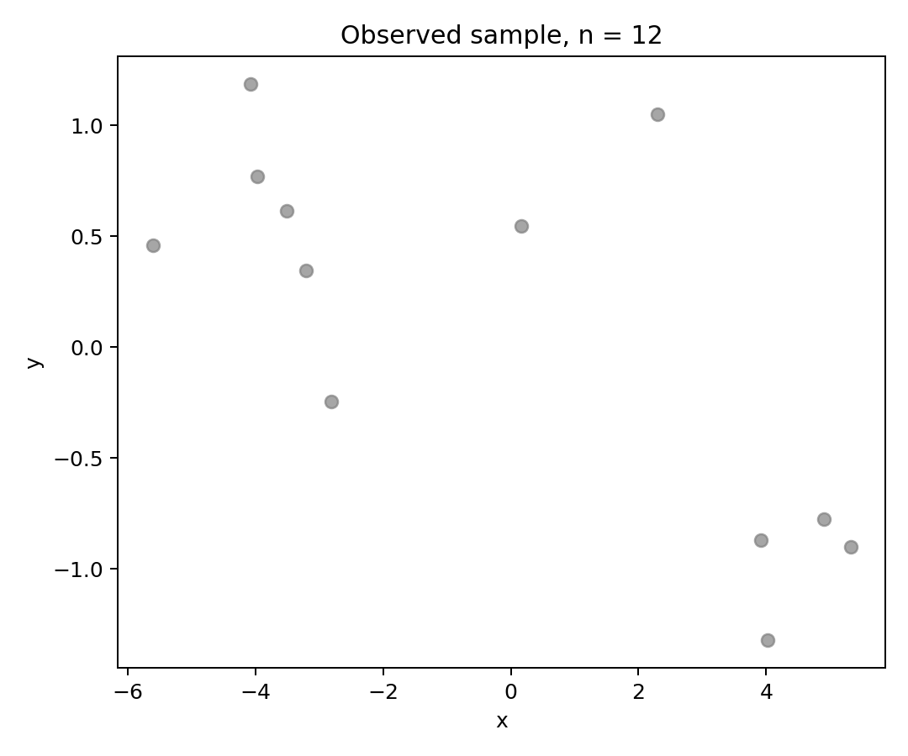
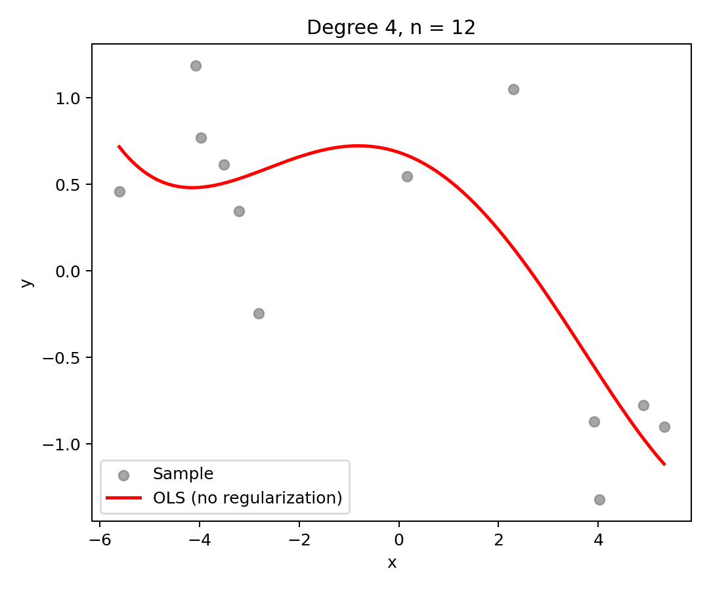
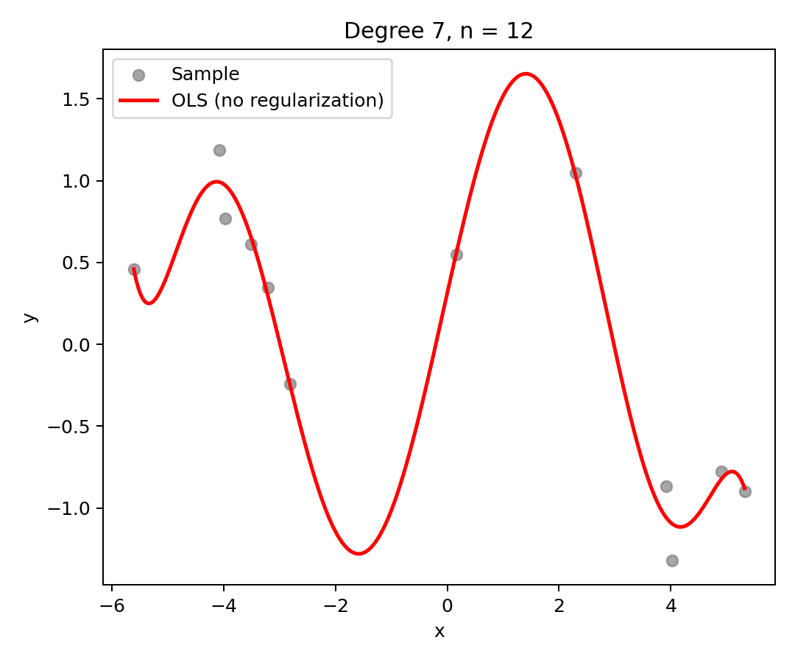
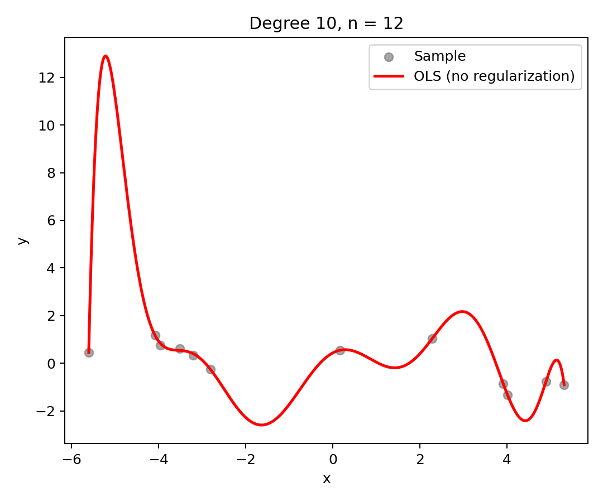
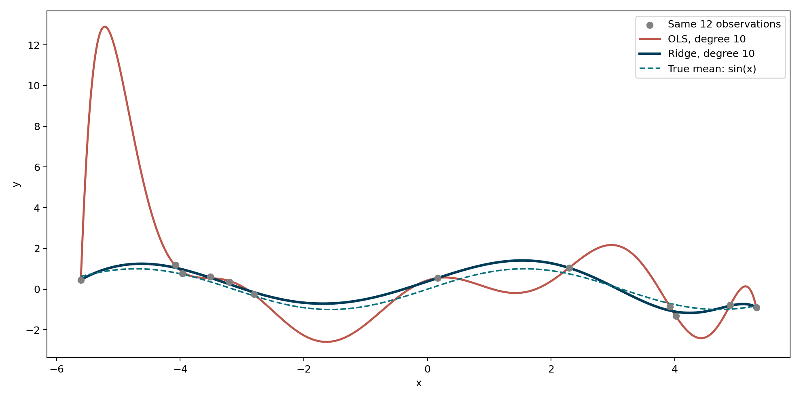
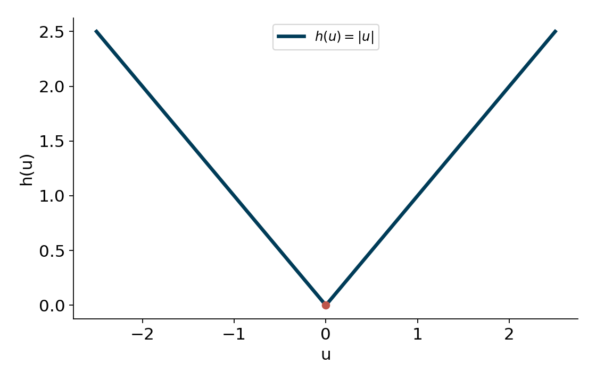
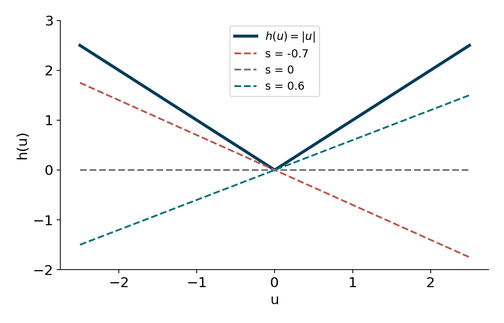
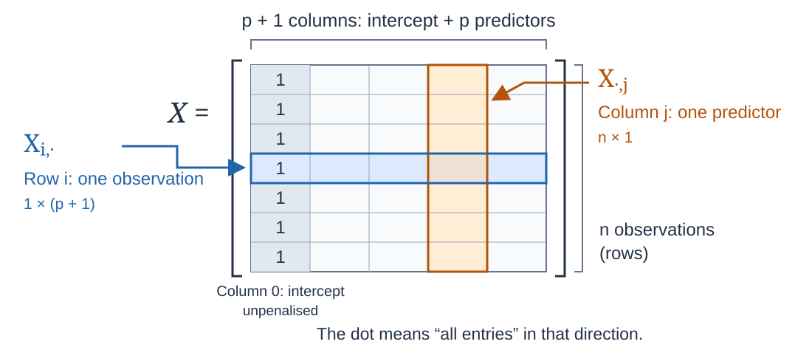
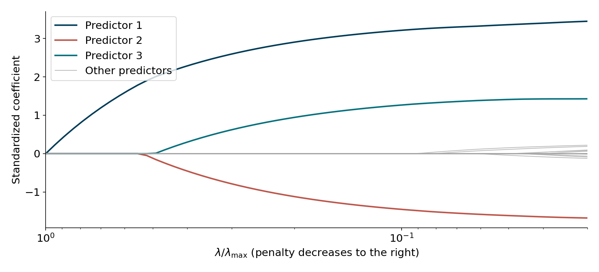
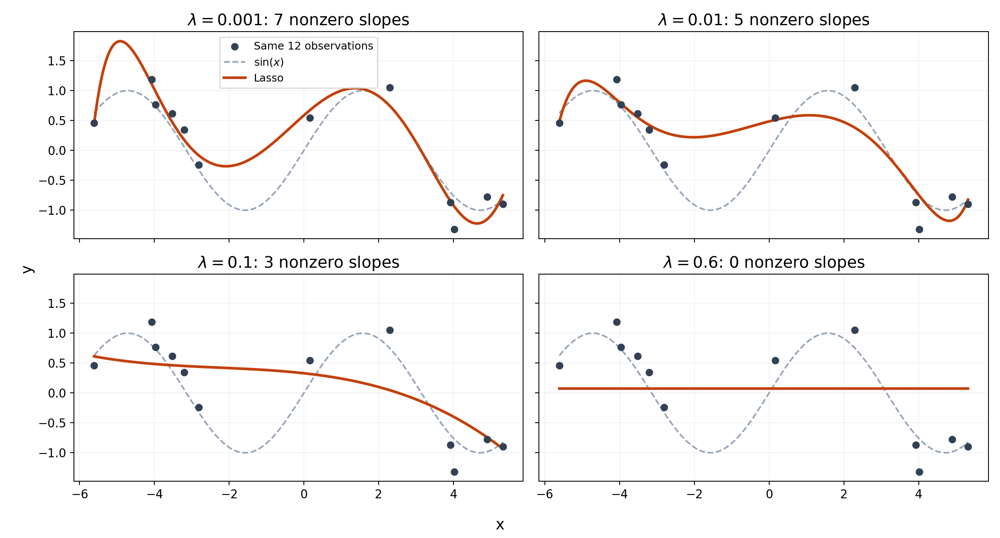

html`<div style="display: flex; justify-content: center; width: 100%;">
${Plot.plot({
width: 900,
height: 420,
y: {domain: [-1.2, 1.2], label: "f(t)"},
x: {domain: [0.9, 1], label: "t"},
marks: [
Plot.line(d3.range(0.9, 0.9995, 0.0001).map(t => ({t, y: Math.sin(1/(1-t))})), {
x: "t", y: "y", stroke: "#333", strokeWidth: 1
}),
Plot.ruleX([1], {stroke: "red", strokeDasharray: "4,4"})
]
})}
</div>`DOCE-202 Computational Statistics II
Unit 1: Advanced Optimization
Nicolás Rivera
\(\newcommand{\R}{\mathbb{R}}\)
Fundamentals of Nonlinear Optimization I: Basic Multivariate Calculus
Euclidian Norm
Definition 1 (Euclidean Norm -\(L_2\) Norm) For a vector \({x} = (x_1, x_2, \dots, x_n) \in \R^n\), the Euclidean norm (or \(2\)-norm) is defined as:
\[ \|{x}\|_2 = \sqrt{\sum_{i=1}^{n} x_i^2} = \sqrt{x_1^2 + x_2^2 + \cdots + x_n^2} \]
Some people writes \(\| \cdot \|\) if it is clear from the context that we are using the Euclidean norm
Properties
For any \({x}, {y} \in \R^n\) and scalar \(\alpha \in \R\):
- Non-negativity: \(\|{x}\|_2 \ge 0\), and \(\|{x}\|_2 = 0 \iff {x} = \mathbf{0}\).
- Absolute Homogeneity: \(\|\alpha {x}\|_2 = |\alpha| \|{x}\|_2\).
- Triangle Inequality: \(\|{x} + {y}\|_2 \le \|{x}\|_2 + \|\mathbf{y}\|_2\).
Inner Product
Definition 2 (Inner Product (Dot Product)) For two vectors \({x} = (x_1, x_2, \dots, x_n)\) and \({y} = (y_1, y_2, \dots, y_n)\) in \(\R^n\), the inner product (or dot product) is defined as:
\[\langle {x}, {y} \rangle = \sum_{i=1}^{n} x_i y_i = x_1y_1 + x_2y_2 + \cdots + x_ny_n.\]
The Euclidean norm is induced by the inner product:
\[\|{x}\|_2 = \sqrt{\langle {x}, {x}\rangle }.\]
Properties
For any \({x}, {y}, {z} \in \R^n\) and scalar \(\alpha \in \R\):
- Symmetry: \(\langle {x}, {y} \rangle = \langle {y}, {x} \rangle\).
- Linearity: \(\langle \alpha {x} + {y}, {z} \rangle = \alpha \langle {x}, {z} \rangle + \langle {y}, {z} \rangle\).
- Positive Definiteness: \(\langle {x}, {x} \rangle \ge 0\), and \(\langle {x}, {x} \rangle = 0 \iff {x} = \mathbf{0}\).
- Cauchy–Schwarz Inequality: \(|\langle {x}, {y} \rangle| \le \|{x}\|_2 \|{y}\|_2\).
Smoothness: Continuity
Definition 3 (Continuity) A function \(F:U\subseteq \R^n \to \R^m\) is called continuous in \(x\) if for every sequence \(x_k\in \R^n\) wuch that \(\lim_{k\to \infty}\|x_k-x\|= 0\), then \[\lim_{k\to \infty} \|F(X_k)- F(x)\|=0\]
A stronger notion is being Lipschitz continuous
Definition 4 (Lipschitz Continuity) A function \(F:U\subseteq \R^n \to \R^m\) is called Lispchitz continuous if there exists \(L>0\) such that \[ \|F(x_k)- F(x)\|\leq L \|x_k-x\|\]
The notion of Lipschitz continuity is a sort of practical continuity: while nobody discuss that jumps are clear discontinuities, there are other type of discontinuities
2. The Pathological Case
Consider the function \(f(t) = \sin\left(\frac{1}{1-t}\right)\) on \([0,1)\). Define \(f(1) = 0\).
Even without a jump, as \(t \to 1\), the function compresses an infinite number of waves into a finite space. It lacks a limit at \(1\).
In practice, we won’t find functions as bad as the previous one, but still function can be very wavy, making it hard of us to predict the behaviour in a vecinity. This is awful for algorithm that work locally, as they need a predictable of the function around the current point.
Intuition for Lipschitz continuity
Consider the function \(t\to \sin(ct)\)
viewof c = Inputs.range([0.1, 5], {
value: 1.0, step: 0.1, label: "Wave Frequency (c):"
});
viewof L = Inputs.range([0.1, 5], {
value: 1.5, step: 0.1, label: "Lipschitz Limit (L):"
});
viewof x0 = Inputs.range([0, 10], {
value: 5, step: 0.1, label: "Test Point (x₀):"
});
// 2. The Math for f(t) = sin(c * t)
// The maximum derivative of sin(ct) is exactly c.
maxSlope = c;
isLipschitz = maxSlope <= L;
data = d3.range(0, 10.05, 0.05).map(t => {
let ft = Math.sin(c * t);
let coneUpper = Math.sin(c * x0) + L * Math.abs(t - x0);
let coneLower = Math.sin(c * x0) - L * Math.abs(t - x0);
return { t, ft, coneUpper, coneLower };
});
// 3. The Plot (Centered below the sliders)
html`<div style="display: flex; justify-content: center; width: 100%; margin-top: 15px;">
${Plot.plot({
width: 900,
height: 420,
style: {
fontSize: "18px",
fontFamily: "system-ui, sans-serif"
},
// Domain widened to [-2, 2] so the standard sine wave (-1 to 1) fits nicely
y: {domain: [-2, 2], label: "f(t)", labelOffset: 45},
x: {domain: [0, 10], label: "t"},
grid: true,
marks: [
Plot.areaY(data, {
x: "t", y1: "coneLower", y2: "coneUpper",
fill: isLipschitz ? "#bfdbfe" : "#fecaca", fillOpacity: 0.5
}),
Plot.line(data, {
x: "t", y: "ft",
stroke: isLipschitz ? "#16a34a" : "#dc2626", strokeWidth: 3
}),
Plot.dot([{t: x0, y: Math.sin(c * x0)}], {
x: "t", y: "y", r: 8, fill: "#1e293b"
}),
Plot.text([{t: 0.2, y: 1.8}], {
x: "t", y: "y",
text: () => `Max Slope: ${maxSlope.toFixed(2)} | Threshold: ${L.toFixed(2)}`,
fontSize: 22,
fontWeight: "bold",
textAnchor: "start"
}),
Plot.text([{t: 0.2, y: 1.5}], {
x: "t", y: "y",
text: () => isLipschitz ? "Status: L-Lipschitz Maintained" : "Status: Cone Pierced! (Function too wavy)",
fontSize: 22,
fontWeight: "bold",
textAnchor: "start",
fill: isLipschitz ? "#16a34a" : "#dc2626"
})
]
})}
</div>`Smoothness: Derivative - Jacobian
Definition 5 (Differentiability and Jacobian) A function \(F:U\subseteq \R^n \to \R^m\) is called differentiable in \(x\) if there exists a linear mapping \(F'_x:\R^n \to \R^m\) with
\[\lim_{\|h\|\to 0} \frac{\|F(x+h)-F(x)-F'_x(h)\|}{\|h\|}=0\]
The matrix representation of \(F'_x\) is called the Jacobi matrix of \(F\), or Jacobian, which is given by
\[J_F = \begin{bmatrix} \frac{\partial f_1}{\partial x_1} & \frac{\partial f_1}{\partial x_2} & \cdots & \frac{\partial f_1}{\partial x_n} \\[1ex] \frac{\partial f_2}{\partial x_1} & \frac{\partial f_2}{\partial x_2} & \cdots & \frac{\partial f_2}{\partial x_n} \\[1ex] \vdots & \vdots & \ddots & \vdots \\[1ex] \frac{\partial f_m}{\partial x_1} & \frac{\partial f_m}{\partial x_2} & \cdots & \frac{\partial f_m}{\partial x_n} \end{bmatrix}\]
Then \(F'_x = J_F(x)\).
Smoothness: Gradient and Hessian
In the particular case that \(m=1\), the transpose of the Jacobian is the so-called gradient \(\nabla\):
Gradient
\[\nabla f = \begin{bmatrix} \frac{\partial f}{\partial x_1} \\[1ex] \frac{\partial f}{\partial x_2} \\[1ex] \vdots \\[1ex] \frac{\partial f}{\partial x_n} \end{bmatrix}\]
but in general writting gradient as a row or column has little importance.
- We say that \(f\) is continuously differentiable if \(\nabla f\) is a continuous function
- We say that \(f\) is \(L\)-smooth if \(\nabla f\) is Lipschitz continuous with constant \(L\)
Smoothness: Directional Derivative
Another important concept is the Directional Derivative
Directional Derivative
Given a vector \(v\in \R^n\) we can show that \[\lim_{\lambda\to 0} \frac{f(x+\lambda v)-f(x)}{\lambda} = \langle \nabla f(x) , v\rangle\]
which is called the directional derivative in the direction of \(v\).
Smoothness: Gradient and Hessian
Let \(f:\R^n \to\R\). The Hessian of \(f\) is the matrix of second-order partial derivatives. Equivalently, it is the Jacobian of the gradient:
\[(Hf)(x)=J(\nabla f)(x)= \begin{bmatrix} \frac{\partial^2 f}{\partial x_1^2} & \frac{\partial^2 f}{\partial x_1\partial x_2} & \cdots & \frac{\partial^2 f}{\partial x_1\partial x_n} \\[0.4em] \frac{\partial^2 f}{\partial x_2\partial x_1} & \frac{\partial^2 f}{\partial x_2^2} & \cdots & \frac{\partial^2 f}{\partial x_2\partial x_n} \\ \vdots & \vdots & \ddots & \vdots \\ \frac{\partial^2 f}{\partial x_n\partial x_1} & \frac{\partial^2 f}{\partial x_n\partial x_2} & \cdots & \frac{\partial^2 f}{\partial x_n^2} \end{bmatrix}.\]
Remark
- Some people writes \(\nabla^2\) instead of \(H\).
- If \(f\) has continuous second-order partial derivatives, then the Hessian is symmetric:
\[H f(x)=\big(Hf(x)\big)^\top,\]
i.e.,
\[\frac{\partial^2 f}{\partial x_i\partial x_j}=\frac{\partial^2 f}{\partial x_j\partial x_i}.\]
Smoothness: Key Results
Theorem 1 (Mean Value Theorem I) Let \(f : \R^n \to \R\) be smooth. Then for any \(x, y \in \R^n\), there exists a \(\xi := y + \gamma(x - y)\) with \(\gamma \in (0,1)\) such that:
\[ f(y) = f(x) + \langle \nabla f(\xi), y - x \rangle \]
Theorem 2 (Mean Value Theorem II: Integral Form) Let \(F : \R^n \to \R^m\) be continuously differentiable. Then for any \(x, y \in \R^n\):
\[ F(y) = F(x) + \int_0^1 J_F(x + \gamma(y - x))(y - x) d\gamma \]
and for \(m=1\), the previous equations reads
\[F(y) - F(x) = \int_0^1 \langle \nabla F(y + t(x-y)), x-y \rangle \, dt\]
Smoothness: Key Results
Corollary 1 (Descent Lemma) Let \(f : \R^n \to \R\) be \(L\)-smooth. Then for any \(x, y \in \R^n\),
\[ f(x) \le f(y) + \langle \nabla f(y), x - y \rangle + \frac{L}{2} \|x - y\|^2 \]
Proof
By the mean value theorem II (exchaing the role of \(x\) and \(y\)), we can write the exact difference as an integral: \[ f(x) - f(y) = \int_0^1 \langle \nabla f(y + t(x-y)), x-y \rangle \, dt \]
We can subtract and add \(\langle \nabla f(y), x-y \rangle\) inside the integral: \[ f(x) - f(y) = \langle \nabla f(y), x-y \rangle + \int_0^1 \langle \nabla f(y + t(x-y)) - \nabla f(y), x-y \rangle \, dt \]
Applying the Cauchy-Schwarz inequality to the integral term gives: \[ f(x) - f(y) - \langle \nabla f(y), x-y \rangle \le \int_0^1 \|\nabla f(y + t(x-y)) - \nabla f(y)\| \|x-y\| \, dt \]
By the definition of \(L\)-smoothness, the gradient is \(L\)-Lipschitz continuous, meaning: \[ \|\nabla f(y + t(x-y)) - \nabla f(y)\| \le L \|t(x-y)\| = Lt \|x-y\| \]
Substituting this upper bound into our integral: \[ \dots \le \int_0^1 Lt \|x-y\|^2 \, dt = L \|x-y\|^2 \int_0^1 t \, dt \]
Finally, evaluating the integral \(\int_0^1 t \, dt = \frac{1}{2}\) yields the required result: \[ f(x) - f(y) - \langle \nabla f(y), x-y \rangle \le \frac{L}{2} \|x-y\|^2 \]
Fundamentals of Nonlinear Optimization II: Convex Analysis
Open Set
We define the \(\varepsilon\)-ball around the point \(x\in \R^n\) by
\[B_\varepsilon(x) = \{y\in \R^n: \|x-y\|\leq \varepsilon\}\]
Definition 6 (Open Sets)
We say that a point \(x \in U\subseteq \R^n\) is an interior point of \(U\) if there exists \(\varepsilon > 0\) such that \(B_{\varepsilon}(x) \subseteq U\)
We say \(U\subseteq \R^n\) is an open set if every \(x\in U\) is an interior point of \(U\).
viewof openSetDemo = {
// 1. Create the HTML layout
const container = html`
<div>
<div style="display: flex; justify-content: center; margin-bottom: 1rem;">
<!-- touch-action: none prevents the page from scrolling while dragging -->
<svg width="700" height="400" viewBox="0 0 300 250" style="background: #f8fafc; border-radius: 8px; border: 1px solid #e2e8f0; cursor: crosshair;">
<text x="120" y="10" font-family="sans-serif" font-size="10" fill="#64748b" font-weight="bold">Example</text>
<text x="15" y="42" font-family="sans-serif" font-size="10" fill="#64748b">Top & Left: Open (dashed) | Bottom & Right: Closed (solid)</text>
<!-- The Set (Fill) -->
<polygon points="60,70 240,70 240,200 60,200" fill="#bfdbfe" opacity="0.4" />
<!-- Dashed (Excluded) Borders -->
<path d="M 60 200 L 60 70 L 240 70" fill="none" stroke="#3b82f6" stroke-width="3" stroke-dasharray="6,6" />
<!-- Solid (Included) Borders -->
<path d="M 240 70 L 240 200 L 60 200" fill="none" stroke="#1d4ed8" stroke-width="4" />
<!-- Dynamic Epsilon Ball and Point -->
<circle id="ball" cx="150" cy="135" r="20" fill="#bbf7d0" opacity="0.6" stroke="#22c55e" stroke-width="1.5" />
<circle id="point-x" cx="150" cy="135" r="3" fill="#0f172a" />
<text id="point-label" x="156" y="139" font-style="italic" font-family="serif" font-weight="bold" font-size="12" fill="#0f172a">x</text>
<!-- Status Text at the bottom -->
<text id="status-text" x="15" y="235" font-family="sans-serif" font-size="12" font-weight="bold" fill="#16a34a"></text>
</svg>
</div>
<!-- The Radius Slider -->
<div style="display: flex; align-items: center; justify-content: center; gap: 15px; margin: 0 auto; max-width: 200px;">
<span style="font-family: sans-serif; font-size: 2rem; white-space: nowrap; color: #334155;">Radius (ε):</span>
<input id="radius-slider" type="range" min="2" max="50" step="1" value="20" style="width: 400px; margin: 0; cursor: pointer;">
</div>
</div>
`;
// 2. Select elements to update them dynamically
const svg = container.querySelector("svg");
const slider = container.querySelector("#radius-slider");
const ball = container.querySelector("#ball");
const pt_x = container.querySelector("#point-x");
const pt_label = container.querySelector("#point-label");
const statusText = container.querySelector("#status-text");
// Start the point safely inside the set
let currentPt = {x: 180, y: 135};
// 3. The Math Engine: Calculates colors and text based on position
function updateVisuals() {
const r = slider.valueAsNumber;
// Update graphic positions
ball.setAttribute("cx", currentPt.x);
ball.setAttribute("cy", currentPt.y);
ball.setAttribute("r", r);
pt_x.setAttribute("cx", currentPt.x);
pt_x.setAttribute("cy", currentPt.y);
pt_label.setAttribute("x", currentPt.x + 6);
pt_label.setAttribute("y", currentPt.y + 4);
// MATHEMATICS CHECK:
// The set S is defined as X in (60, 240] and Y in (70, 200]
const inSet = currentPt.x > 60 && currentPt.x <= 240 && currentPt.y > 70 && currentPt.y <= 200;
// The ball is completely inside if all its edges are inside the boundary
// (Notice it must be STRICTLY less than the solid borders to not include boundary points)
const ballContained = (currentPt.x - r > 60) && (currentPt.x + r < 240) &&
(currentPt.y - r > 70) && (currentPt.y + r < 200);
if (!inSet) {
ball.setAttribute("fill", "#e2e8f0"); // Gray
ball.setAttribute("stroke", "#94a3b8");
statusText.textContent = "Point x is outside the set S.";
statusText.setAttribute("fill", "#64748b");
} else if (ballContained) {
ball.setAttribute("fill", "#bbf7d0"); // Green
ball.setAttribute("stroke", "#22c55e");
statusText.textContent = "✓ Ball is inside S, the point is an interior point";
statusText.setAttribute("fill", "#16a34a");
} else {
ball.setAttribute("fill", "#fca5a5"); // Red
ball.setAttribute("stroke", "#ef4444");
statusText.textContent = "✗ Ball spills out.";
statusText.setAttribute("fill", "#dc2626");
}
}
// 4. Mouse / Touch Dragging Logic
let isDragging = false;
function handlePointer(e) {
const rect = svg.getBoundingClientRect();
// Convert physical screen pixels to internal SVG coordinates
let x = (e.clientX - rect.left) * (300 / rect.width);
let y = (e.clientY - rect.top) * (250 / rect.height);
// MAGNETIC SNAP: If they drag near a border, snap it exactly onto the border!
if (Math.abs(x - 240) < 8 && y >= 70 && y <= 200) x = 240; // Right solid border
if (Math.abs(y - 200) < 8 && x >= 60 && x <= 240) y = 200; // Bottom solid border
if (Math.abs(x - 60) < 8 && y >= 70 && y <= 200) x = 60; // Left dashed border
if (Math.abs(y - 70) < 8 && x >= 60 && x <= 240) y = 70; // Top dashed border
currentPt.x = x;
currentPt.y = y;
updateVisuals();
}
// Wire up the event listeners
slider.addEventListener("input", updateVisuals);
svg.addEventListener("pointerdown", (e) => {
isDragging = true;
svg.setPointerCapture(e.pointerId); // Keeps tracking even if mouse leaves the box slightly
handlePointer(e);
});
svg.addEventListener("pointermove", (e) => {
if (isDragging) handlePointer(e);
});
svg.addEventListener("pointerup", () => isDragging = false);
svg.addEventListener("pointercancel", () => isDragging = false);
updateVisuals(); // Paint the first frame
return container;
}Convex Sets
Definition 7 (Convex Sets) A set \(C \subseteq \R^n\) is convex if, for every \(x, y \in C\) and every \(\lambda \in [0,1]\),
\[\lambda x + (1-\lambda)y \in C.\]
Equivalently, the line segment joining any two points of the set lies entirely inside the set.
html`
<div style="display: flex; gap: 2rem; justify-content: center; margin-bottom: 1.5rem;">
<!-- CONVEX SET (Modify width="450" and height="305" below to change size) -->
<svg width="900" height="500" viewBox="0 0 300 250" style="background: #f8fafc; border-radius: 8px; border: 1px solid #e2e8f0;">
<text x="15" y="45" font-family="sans-serif" font-weight="bold" fill="#334155"> Convex Set</text>
<g transform="translate(0, 20)">
<ellipse cx="150" cy="130" rx="100" ry="80" fill="#bbf7d0" opacity="0.7" stroke="#22c55e" stroke-width="2"/>
<line x1="100" y1="100" x2="200" y2="160" stroke="#64748b" stroke-dasharray="4"/>
<circle cx="100" cy="100" r="4" fill="#0f172a" />
<text x="85" y="95" font-style="italic" font-family="serif">x</text>
<circle cx="200" cy="160" r="4" fill="#0f172a" />
<text x="210" y="165" font-style="italic" font-family="serif">y</text>
<circle cx="${100 * lambda + 200 * (1 - lambda)}" cy="${100 * lambda + 160 * (1 - lambda)}" r="6" fill="#ef4444" />
</g>
</svg>
<!-- NON-CONVEX SET (Modify width="450" and height="375" below to match) -->
<svg width="450" height="500" viewBox="0 0 300 250" style="background: #f8fafc; border-radius: 8px; border: 1px solid #e2e8f0;">
<text x="15" y="45" font-family="sans-serif" font-weight="bold" fill="#334155">Non-Convex Set</text>
<polygon points="80,50 140,50 140,150 220,150 220,210 80,210" fill="#fecaca" opacity="0.7" stroke="#ef4444" stroke-width="2" />
<line x1="110" y1="100" x2="180" y2="180" stroke="#64748b" stroke-dasharray="4"/>
<circle cx="110" cy="100" r="4" fill="#0f172a" />
<text x="95" y="95" font-style="italic" font-family="serif">x</text>
<circle cx="180" cy="180" r="4" fill="#0f172a" />
<text x="190" y="185" font-style="italic" font-family="serif">y</text>
<circle cx="${110 * lambda + 180 * (1 - lambda)}" cy="${100 * lambda + 180 * (1 - lambda)}" r="6" fill="#ef4444" />
</svg>
</div>
`Convexity
Definition 8 Let \(U \subset \R^n\) be convex. A function \(f : U \to \R\) is called:
convex on \(U\), if for all \(x, y \in U\) and all \(\lambda \in [0,1]\), \[f (\lambda x + (1 - \lambda)y) \le \lambda f (x) + (1 - \lambda)f (y)\]
strictly convex on \(U\), if for all \(x, y \in U\) with \(x \neq y\) and all \(\lambda \in (0,1)\), \[f (\lambda x + (1 - \lambda)y) < \lambda f (x) + (1 - \lambda)f (y)\]
strongly convex on \(U\), if there exists \(\mu > 0\) (called the modulus of convexity) such that for all \(x, y \in X\) and all \(\lambda \in [0,1]\), \[f (\lambda x + (1 - \lambda)y) + \frac{\mu}{2} \lambda(1 - \lambda) \|x - y \|^2 \le \lambda f (x) + (1 - \lambda)f (y).\]
viewof convexFunctionDemo = {
// 1. Calculate the SVG Path for a standard parabola f(x) = x^2
let pathD = "";
for (let x = -2; x <= 2.1; x += 0.1) {
let px = 225 + x * 100; // Scale X by 100, origin at 225
let py = 300 - (x * x) * 100; // Scale Y by 100, origin at 300 (SVG Y goes down)
pathD += (x === -2 ? "M " : "L ") + px + " " + py;
}
// 2. Create the HTML layout
const container = html`
<div>
<div style="display: flex; justify-content: center; margin-top: 1rem; margin-bottom: 0.5rem;">
<svg width="600" height="700" viewBox="0 0 450 330" style="background: #f8fafc; border-radius: 8px; border: 1px solid #e2e8f0;">
<!-- Coordinate Axes -->
<line x1="25" y1="300" x2="425" y2="300" stroke="#cbd5e1" stroke-width="2" />
<line x1="225" y1="320" x2="225" y2="25" stroke="#cbd5e1" stroke-width="2" />
<!-- Function Curve -->
<path d="${pathD}" fill="none" stroke="#3b82f6" stroke-width="3" />
<!-- Fixed Points A and B for the Secant Line -->
<!-- A is at x = -1.2, B is at x = 1.5 -->
<line x1="105" y1="156" x2="375" y2="75" stroke="#94a3b8" stroke-dasharray="5,5" stroke-width="2" />
<circle cx="105" cy="156" r="4" fill="#0f172a" />
<text x="90" y="150" font-family="serif" font-style="italic" font-weight="bold">f(x)</text>
<circle cx="375" cy="75" r="4" fill="#0f172a" />
<text x="385" y="70" font-family="serif" font-style="italic" font-weight="bold">f(y)</text>
<!-- Dynamic Elements updated by the slider -->
<line id="gap-line" x1="0" y1="0" x2="0" y2="0" stroke="#94a3b8" stroke-width="2" stroke-dasharray="3,3" />
<circle id="secant-pt" cx="0" cy="0" r="6" fill="#ef4444" />
<circle id="curve-pt" cx="0" cy="0" r="6" fill="#16a34a" />
<!-- Dynamic Labels -->
<text id="secant-label" font-family="sans-serif" font-size="12" font-weight="bold" fill="#ef4444">λf(x) + (1-λ)f(y)</text>
<text id="curve-label" font-family="sans-serif" font-size="12" font-weight="bold" fill="#16a34a">f(λx + (1-λ)y)</text>
</svg>
</div>
<!-- The Slider Container (Protected from Reveal.js CSS) -->
<div style="display: flex; align-items: center; justify-content: center; gap: 15px; margin: 0 auto; width: 100%; max-width: 400px;">
<span style="font-family: sans-serif; font-size: 3rem; white-space: nowrap; color: #334155;">λ:</span>
<input type="range" id="lambda-function" min="0" max="1" step="0.01" value="0.5" style="width: 250px; margin: 0; cursor: pointer;">
</div>
</div>
`;
// 3. Select elements to animate
const slider = container.querySelector("#lambda-function");
const secantPt = container.querySelector("#secant-pt");
const curvePt = container.querySelector("#curve-pt");
const gapLine = container.querySelector("#gap-line");
const secantLabel = container.querySelector("#secant-label");
const curveLabel = container.querySelector("#curve-label");
// Fixed math values for x and y
const x1 = -1.2, f1 = x1 * x1;
const x2 = 1.5, f2 = x2 * x2;
// 4. Update Function
function update() {
const lam = slider.valueAsNumber;
// Calculate intermediate X
// Note: When lam=1, we are at x1. When lam=0, we are at x2.
const currentX = lam * x1 + (1 - lam) * x2;
// Calculate Y heights
const secantY = lam * f1 + (1 - lam) * f2;
const curveY = currentX * currentX;
// Convert math coordinates to pixels
const px = 225 + currentX * 100;
const pySecant = 300 - secantY * 100;
const pyCurve = 300 - curveY * 100;
// Move the dots
secantPt.setAttribute("cx", px);
secantPt.setAttribute("cy", pySecant);
curvePt.setAttribute("cx", px);
curvePt.setAttribute("cy", pyCurve);
// Move the dashed line connecting them
gapLine.setAttribute("x1", px);
gapLine.setAttribute("y1", pySecant);
gapLine.setAttribute("x2", px);
gapLine.setAttribute("y2", pyCurve);
// Position the labels (with minor offsets so they don't overlap the line)
secantLabel.setAttribute("x", px + 10);
secantLabel.setAttribute("y", pySecant - 10);
curveLabel.setAttribute("x", px + 10);
curveLabel.setAttribute("y", pyCurve + 20);
}
// 5. Connect the slider
slider.addEventListener("input", update);
update(); // run once to set initial position
return container;
}Gradient Inequalities
Theorem 3 Let \(U \subset \R^n\) be open and convex and let \(f:U \to \R\) be smooth (differentiable). Then \(f\) is:
- convex if and only if for all \(x,y \in U\), \[\langle \nabla f(y), x-y\rangle \leq f(x) - f(y)\]
- strictly convex if and only if for all \(x,y \in U\) with \(x\neq y\) \[\langle \nabla f(y), x-y\rangle < f(x) - f(y)\]
- strongly convex if and only if for all \(x,y \in U\) we have \[\langle \nabla f(y), x-y\rangle+\frac{\mu}{2}\|x-y\|^2 \leq f(x) - f(y),\] where \(\mu\) is the modulus of convexity
Proof
Proof of (i): Convexity
(\(\implies\)): By convexity, for any \(\lambda \in (0, 1]\): \[f(y + \lambda(x-y)) \le (1-\lambda)f(y) + \lambda f(x)\] Rearranging and dividing by \(\lambda\) gives: \[\frac{f(y + \lambda(x-y)) - f(y)}{\lambda} \le f(x) - f(y)\] Taking the limit as \(\lambda \to 0\), the left side becomes the directional derivative, yielding \(\langle \nabla f(y), x-y \rangle\).
(\(\impliedby\)): Let \(z = \lambda x + (1-\lambda)y\). Apply the assumption at \(z\) for points \(x\) and \(y\): 1. \(f(x) \ge f(z) + \langle \nabla f(z), x-z \rangle\) 2. \(f(y) \ge f(z) + \langle \nabla f(z), y-z \rangle\)
Multiply (1) by \(\lambda\), (2) by \((1-\lambda)\), and add them. The gradient terms perfectly cancel since \(\lambda(x-z) + (1-\lambda)(y-z) = 0\), leaving the definition of convexity.
Proof of (ii): Strict Convexity
(\(\implies\)): Suppose for contradiction that equality holds for \(x \neq y\): \[f(x) - f(y) = \langle \nabla f(y), x-y \rangle\] Let \(z = y + \lambda(x-y)\). Strict convexity requires: \[f(z) < f(y) + \lambda(f(x) - f(y))\] Substitute our equality assumption into this: \[f(z) < f(y) + \lambda\langle \nabla f(y), x-y \rangle = f(y) + \langle \nabla f(y), z-y \rangle\] This strictly contradicts part (i), which states \(f(z) - f(y) \ge \langle \nabla f(y), z-y \rangle\).
(\(\impliedby\)): This follows the exact same steps as the backward proof for (i). Because the assumed gradient inequalities are strict for \(x \neq y\), adding them together produces a strictly convex inequality.
Proof of (iii): Strong Convexity
Key insight: A function \(f(x)\) is strongly convex if and only if the function \(g(x) = f(x) - \frac{\mu}{2}\|x\|^2\) is standardly convex.
Since \(g(x)\) is convex, we can directly apply part (i) to it: \[g(x) - g(y) \ge \langle \nabla g(y), x-y \rangle\]
Substitute \(g(x)\) and its gradient \(\nabla g(y) = \nabla f(y) - \mu y\): \[f(x) - \frac{\mu}{2}\|x\|^2 - \left(f(y) - \frac{\mu}{2}\|y\|^2\right) \ge \langle \nabla f(y) - \mu y, x-y \rangle\]
Rearranging to isolate \(f(x) - f(y)\) gives: \[f(x) - f(y) \ge \langle \nabla f(y), x-y \rangle + \mu \left( \frac{1}{2}\|x\|^2 - \frac{1}{2}\|y\|^2 - \langle y, x-y \rangle \right)\]
Using the Euclidean expansion \(\|x-y\|^2 = \|x\|^2 - 2\langle x, y \rangle + \|y\|^2\), the terms inside the parenthesis perfectly collapse to \(\frac{1}{2}\|x-y\|^2\), completing the proof.
Minimisers
Definition 9 (Local and Global Minimum)
Let \(f:U\subseteq \R^n \to \R\). We say that \(x^* \in U\) is a local minumum if there exists a \(\varepsilon\) such that \[f(x^*) \leq f(x) \text{ for all $x \in B_\varepsilon(x^*) \cap U$}.\]
A point \(x^*\in U\) is a global minumum if \[f(x^*) \leq f(x) \text{ for all $x \in U$} \]
Analogously, we define strict global/local minimum if we replace \(\leq\) with \(<\).
We define global/local maxima is a similar fashion.
- In general a local minimum is not a global minimum.
- In general we don’t care about maxima because \(\max_{x\in U}f(x)\) is equivalent to find \(\min_{x\in U}-f(x)\).
Convexity and optimization
Convexity is very relevant for optimization due to the following fact.
Theorem 4 Let \(U\subseteq \R^n\) be a convex set and let \(f:\R^n\to \R\). If \(x^* \in U\) is a local minimum then is a global minimum. Moreover, if \(f\) is strictly convex, then \(f\) has at most one local minimum.
We have to remember the usual criteria for minimum/maximum in differentiable function
Theorem 5 (First order condition) Let \(f:\R^n \to R\) be differentiable. If \(x^*\) is a local minimum or maximum of \(f\), then \(\nabla f(x^*)=0\)
Points with \(\nabla f(x)= 0\) are called stationary or critical points.
Gradient Descent
Gradient Descent
To find pointw with \(\nabla f(x)=0\) that are local minimum the most well-known idea is the gradient descent algorithm which apply the following recursion
Definition 10 (Gradient Descent Iteration) \[x^{k+1} = x^k - \gamma_k \nabla f(x)\]
When performing the update \(x_{k+1} = x_k - \gamma_k \nabla f(x_k)\), the step size \(\gamma_k\) (also known as learning rate) can be determined using several strategies:
Strategies for choosing the step size
1. Predetermined Sequence The sequence \(\{\gamma_k\}_{k=0}^\infty\) is chosen in advance. For example:
- Constant step: \(\gamma_k = \gamma > 0\)
- Decaying step: \(\gamma_k = \frac{\gamma}{\sqrt{k+1}}\)
2. Full Relaxation (Exact Line Search) Choose the step size that strictly minimizes the function along the search direction: \(\gamma_k = \arg\min_{\gamma \ge 0} f(x_k - \gamma \nabla f(x_k))\)
3. The Armijo-Goldstein Rule Find \(x_{k+1} = x_k - \gamma_k \nabla f(x_k)\) with \(\gamma_k > 0\) such that it satisfies the sufficient decrease conditions:
\[f(x_k)-f(x_{k+1})\geq \alpha \langle \nabla f(x_k), x_k - x_{k+1} \rangle \qquad \alpha \in [0,1]\]
\[f(x_k)-f(x_{k+1})\leq \beta \langle \nabla f(x_k), x_k - x_{k+1} \rangle \qquad \beta \in [0,1]\]
where \(0 < \alpha < \beta < 1\) are fixed parameters.
In practice, options 1 and 3 are fine. Option 2 is too theoretical and essentially involves solving the optimisation problem, which is what we want to do.
Visualization: The Armijo-Goldstein Conditions on \(f(x) = ax^3+bx^2+cx+d\)
d3 = require("d3@7")
viewof pars = Inputs.form(
{
a: Inputs.range([-1, 1], {
value: 0.10,
step: 0.01,
label: "a"
}),
b: Inputs.range([-2, 2], {
value: 0.50,
step: 0.05,
label: "b"
}),
c: Inputs.range([-3, 3], {
value: -1,
step: 0.05,
label: "c"
}),
d: Inputs.range([-3, 3], {
value: 0,
step: 0.05,
label: "d"
}),
alpha: Inputs.range([0.01, 0.49], {
value: 0.20,
step: 0.01,
label: "α"
}),
beta: Inputs.range([0.51, 0.99], {
value: 0.80,
step: 0.01,
label: "β"
})
},
{
template: ({
a,
b,
c,
d,
alpha,
beta
}) => html`
<div style="
display:grid;
grid-template-columns:repeat(3, minmax(150px, 1fr));
gap:0.15rem 0.8rem;
align-items:end;
">
${a}
${b}
${c}
${d}
${alpha}
${beta}
</div>
`
}
)
mutable xk = 0
mutable zoomFactor = 1armijo_plot = {
const A = pars.a
const B = pars.b
const C = pars.c
const D = pars.d
const alpha = pars.alpha
const beta = pars.beta
// ============================================================
// Function and derivative
// ============================================================
const f = x =>
A * x ** 3 +
B * x ** 2 +
C * x +
D
const df = x =>
3 * A * x ** 2 +
2 * B * x +
C
const x0 = xk
const f0 = f(x0)
const g = df(x0)
// ============================================================
// Tangent and Armijo-Goldstein boundaries
// ============================================================
const tangent = x =>
f0 +
g * (x - x0)
const armijo = x =>
f0 +
alpha * g * (x - x0)
const goldstein = x =>
f0 +
beta * g * (x - x0)
// ============================================================
// Is x an acceptable next point?
//
// Goldstein:
//
// f(x) >= f(x_k) + beta f'(x_k)(x-x_k)
//
// Armijo:
//
// f(x) <= f(x_k) + alpha f'(x_k)(x-x_k)
//
// We also require movement in the descent direction.
// ============================================================
const acceptable = x => {
if (
g * (x - x0) >= 0
) {
return false
}
const fx =
f(x)
const lower =
goldstein(x)
const upper =
armijo(x)
const tol =
1e-10 *
(
1 +
Math.abs(f0) +
Math.abs(fx)
)
return (
fx >= lower - tol &&
fx <= upper + tol
)
}
// ============================================================
// Find first Armijo-Goldstein interval automatically
// ============================================================
const eps = 1e-8
let direction = 0
let firstGood = null
let lastGood = null
let foundEnd = false
if (
Math.abs(g) > eps
) {
// Gradient descent direction
direction =
-Math.sign(g)
let searchRadius =
0.5
for (
let round = 0;
round < 12;
round++
) {
const N = 1600
firstGood = null
lastGood = null
foundEnd = false
let inside = false
for (
let i = 1;
i <= N;
i++
) {
const distance =
searchRadius *
i / N
const x =
x0 +
direction * distance
const ok =
acceptable(x)
if (
ok &&
firstGood === null
) {
firstGood = distance
}
if (ok) {
lastGood = distance
inside = true
} else if (inside) {
foundEnd = true
break
}
}
if (
firstGood !== null &&
foundEnd
) {
break
}
searchRadius *= 2
}
}
// ============================================================
// Automatic x window
// ============================================================
let xDomain
if (
Math.abs(g) < eps
) {
xDomain = [
x0 - 3,
x0 + 3
]
} else if (
firstGood !== null
) {
const reach =
Math.max(
1.5,
1.25 * lastGood
)
const backwards =
Math.max(
0.5,
Math.min(
2,
0.18 * reach
)
)
if (
direction > 0
) {
xDomain = [
x0 - backwards,
x0 + reach
]
} else {
xDomain = [
x0 - reach,
x0 + backwards
]
}
} else {
xDomain = [
x0 - 4,
x0 + 4
]
}
// ============================================================
// Manual zoom
//
// zoomFactor = 1 automatic framing
// zoomFactor > 1 zoom out
// zoomFactor < 1 zoom in
//
// The asymmetry of the automatic view is preserved.
// ============================================================
const leftDistance =
x0 - xDomain[0]
const rightDistance =
xDomain[1] - x0
xDomain = [
x0 -
zoomFactor *
leftDistance,
x0 +
zoomFactor *
rightDistance
]
// ============================================================
// Polynomial data
// ============================================================
const n = 900
const curve =
d3.range(n).map(i => {
const x =
xDomain[0] +
(
xDomain[1] -
xDomain[0]
) *
i / (n - 1)
return {
x: x,
y: f(x)
}
})
// ============================================================
// Cone
//
// Draw only in the descent direction.
// ============================================================
const coneEdge =
direction > 0
? xDomain[1]
: xDomain[0]
const cone =
Math.abs(g) > eps
? d3.range(400).map(i => {
const t =
i / 399
const x =
x0 +
t *
(coneEdge - x0)
return {
x: x,
lower:
goldstein(x),
upper:
armijo(x)
}
})
: []
// ============================================================
// Find acceptable parts of polynomial
// ============================================================
const acceptedSegments = []
let currentSegment = []
for (
const p of curve
) {
if (
acceptable(p.x)
) {
currentSegment.push(p)
} else if (
currentSegment.length > 0
) {
acceptedSegments.push(
currentSegment
)
currentSegment = []
}
}
if (
currentSegment.length > 0
) {
acceptedSegments.push(
currentSegment
)
}
// ============================================================
// y range
// ============================================================
const yValues = [
...curve.map(
d => d.y
),
tangent(
xDomain[0]
),
tangent(
xDomain[1]
),
...cone.flatMap(
d => [
d.lower,
d.upper
]
)
].filter(
Number.isFinite
)
let [yMin, yMax] =
d3.extent(yValues)
if (
yMin === yMax
) {
yMin -= 1
yMax += 1
}
const yPad =
0.08 *
(yMax - yMin)
const yDomain = [
yMin - yPad,
yMax + yPad
]
// ============================================================
// SVG setup
//
// Smaller dimensions for RevealJS
// ============================================================
const W =
Math.max(
400,
Math.min(
width,
900
)
)
const H = 400
const margin = {
top: 15,
right: 25,
bottom: 35,
left: 50
}
const xs =
d3.scaleLinear()
.domain(xDomain)
.range([
margin.left,
W - margin.right
])
const ys =
d3.scaleLinear()
.domain(yDomain)
.range([
H - margin.bottom,
margin.top
])
const svg =
d3.create("svg")
.attr(
"viewBox",
`0 0 ${W} ${H}`
)
.style(
"width",
"100%"
)
.style(
"height",
"auto"
)
.style(
"overflow",
"visible"
)
// ============================================================
// Axes
// ============================================================
svg.append("g")
.attr(
"transform",
`translate(
0,
${H - margin.bottom}
)`
)
.call(
d3.axisBottom(xs)
.ticks(8)
)
svg.append("g")
.attr(
"transform",
`translate(
${margin.left},
0
)`
)
.call(
d3.axisLeft(ys)
.ticks(6)
)
// ============================================================
// Clip plot to axes region
// ============================================================
const clipId =
"armijo-clip-" +
Math.random()
.toString(36)
.slice(2)
svg.append("defs")
.append("clipPath")
.attr(
"id",
clipId
)
.append("rect")
.attr(
"x",
margin.left
)
.attr(
"y",
margin.top
)
.attr(
"width",
W -
margin.left -
margin.right
)
.attr(
"height",
H -
margin.top -
margin.bottom
)
const drawing =
svg.append("g")
.attr(
"clip-path",
`url(#${clipId})`
)
// ============================================================
// Armijo-Goldstein cone
// ============================================================
if (
cone.length > 0
) {
const area =
d3.area()
.x(
d => xs(d.x)
)
.y0(
d => ys(d.lower)
)
.y1(
d => ys(d.upper)
)
drawing.append("path")
.datum(cone)
.attr(
"d",
area
)
.attr(
"fill",
"#56B4E9"
)
.attr(
"opacity",
0.16
)
}
// ============================================================
// Tangent
// ============================================================
const tangentData = [
{
x: xDomain[0],
y: tangent(
xDomain[0]
)
},
{
x: xDomain[1],
y: tangent(
xDomain[1]
)
}
]
drawing.append("path")
.datum(
tangentData
)
.attr(
"d",
d3.line()
.x(
d => xs(d.x)
)
.y(
d => ys(d.y)
)
)
.attr(
"fill",
"none"
)
.attr(
"stroke",
"#777"
)
.attr(
"stroke-width",
2
)
.attr(
"stroke-dasharray",
"7,5"
)
// ============================================================
// Alpha boundary
// ============================================================
if (
cone.length > 0
) {
drawing.append("path")
.datum(cone)
.attr(
"d",
d3.line()
.x(
d => xs(d.x)
)
.y(
d => ys(d.upper)
)
)
.attr(
"fill",
"none"
)
.attr(
"stroke",
"#0072B2"
)
.attr(
"stroke-width",
2.5
)
// ==========================================================
// Beta boundary
// ==========================================================
drawing.append("path")
.datum(cone)
.attr(
"d",
d3.line()
.x(
d => xs(d.x)
)
.y(
d => ys(d.lower)
)
)
.attr(
"fill",
"none"
)
.attr(
"stroke",
"#D55E00"
)
.attr(
"stroke-width",
2.5
)
}
// ============================================================
// Polynomial
// ============================================================
drawing.append("path")
.datum(curve)
.attr(
"d",
d3.line()
.x(
d => xs(d.x)
)
.y(
d => ys(d.y)
)
)
.attr(
"fill",
"none"
)
.attr(
"stroke",
"currentColor"
)
.attr(
"stroke-width",
3
)
// ============================================================
// Highlight acceptable region
// ============================================================
for (
const segment
of acceptedSegments
) {
drawing.append("path")
.datum(segment)
.attr(
"d",
d3.line()
.x(
d => xs(d.x)
)
.y(
d => ys(d.y)
)
)
.attr(
"fill",
"none"
)
.attr(
"stroke",
"#009E73"
)
.attr(
"stroke-width",
7
)
}
// ============================================================
// Selected point x_k
// ============================================================
drawing.append("circle")
.attr(
"cx",
xs(x0)
)
.attr(
"cy",
ys(f0)
)
.attr(
"r",
6
)
.attr(
"fill",
"#CC79A7"
)
.attr(
"stroke",
"white"
)
.attr(
"stroke-width",
2
)
// ============================================================
// Vertical guide
// ============================================================
drawing.append("line")
.attr(
"x1",
xs(x0)
)
.attr(
"x2",
xs(x0)
)
.attr(
"y1",
margin.top
)
.attr(
"y2",
H - margin.bottom
)
.attr(
"stroke",
"#999"
)
.attr(
"stroke-dasharray",
"3,5"
)
.attr(
"opacity",
0.45
)
// ============================================================
// Click layer
//
// Important:
// changing x_k does NOT reset the zoom.
// ============================================================
svg.append("rect")
.attr(
"x",
margin.left
)
.attr(
"y",
margin.top
)
.attr(
"width",
W -
margin.left -
margin.right
)
.attr(
"height",
H -
margin.top -
margin.bottom
)
.attr(
"fill",
"transparent"
)
.style(
"cursor",
"crosshair"
)
.on(
"click",
event => {
const [px] =
d3.pointer(
event,
svg.node()
)
const newX =
xs.invert(px)
mutable xk =
newX
}
)
// ============================================================
// Text describing first acceptable interval
// ============================================================
let regionText
if (
Math.abs(g) < eps
) {
regionText =
"f′(xₖ) ≈ 0: xₖ is approximately stationary."
} else if (
firstGood !== null
) {
const x1 =
x0 +
direction *
firstGood
const x2 =
x0 +
direction *
lastGood
const low =
Math.min(
x1,
x2
)
const high =
Math.max(
x1,
x2
)
regionText =
`Acceptable interval: x ∈ [${low.toFixed(3)}, ${high.toFixed(3)}]`
} else {
regionText =
"No Armijo-Goldstein interval found in the automatic search."
}
// ============================================================
// Information row
// ============================================================
const info = html`
<div style="
display:flex;
flex-wrap:wrap;
gap:0.4rem 1rem;
align-items:center;
margin-top:0.25rem;
font-size:0.76em;
">
<span>
<b>xₖ</b> =
${x0.toFixed(3)}
</span>
<span>
<b>f(xₖ)</b> =
${f0.toFixed(3)}
</span>
<span>
<b>f′(xₖ)</b> =
${g.toFixed(3)}
</span>
<span style="
color:#0072B2;
">
━ α bound
</span>
<span style="
color:#D55E00;
">
━ β bound
</span>
<span style="
color:#009E73;
">
━ acceptable
</span>
<span>
${regionText}
</span>
</div>
`
// ============================================================
// Controls
//
// Manual x_k entry
// Zoom − / +
// Reset
// ============================================================
const controls = html`
<div style="
display:flex;
flex-wrap:wrap;
align-items:center;
gap:0.4rem;
margin-top:0.25rem;
margin-bottom:0.15rem;
font-size:0.82em;
">
<label style="
display:flex;
align-items:center;
gap:0.3rem;
">
<b>xₖ =</b>
<input
data-xk-input
type="number"
step="any"
value=${x0}
style="
width:5.5rem;
height:2rem;
padding:0 0.35rem;
font-size:0.95em;
"
>
</label>
<button
data-action="set-xk"
type="button"
style="
height:2rem;
padding:0 0.6rem;
cursor:pointer;
"
>
Set
</button>
<span style="
width:0.4rem;
">
</span>
<button
data-action="zoom-out"
type="button"
title="Zoom out"
style="
width:2.2rem;
height:2rem;
font-size:1.2rem;
cursor:pointer;
"
>
−
</button>
<button
data-action="zoom-in"
type="button"
title="Zoom in"
style="
width:2.2rem;
height:2rem;
font-size:1.2rem;
cursor:pointer;
"
>
+
</button>
<button
data-action="reset"
type="button"
title="Return to automatic view"
style="
height:2rem;
padding:0 0.65rem;
cursor:pointer;
"
>
Reset
</button>
<span style="
margin-left:0.25rem;
opacity:0.7;
">
Zoom:
${zoomFactor.toFixed(3)}×
</span>
</div>
`
// ============================================================
// Manual x_k
// ============================================================
const xInput =
controls.querySelector(
"[data-xk-input]"
)
const setButton =
controls.querySelector(
'[data-action="set-xk"]'
)
const setXk = () => {
const newX =
Number(
xInput.value
)
if (
Number.isFinite(newX)
) {
// Preserve current zoom
mutable xk =
newX
}
}
setButton.addEventListener(
"click",
setXk
)
// Enter also sets x_k
xInput.addEventListener(
"keydown",
event => {
if (
event.key === "Enter"
) {
setXk()
}
}
)
// ============================================================
// Zoom out
// ============================================================
controls
.querySelector(
'[data-action="zoom-out"]'
)
.addEventListener(
"click",
() => {
mutable zoomFactor =
Math.min(
zoomFactor * 1.6,
100
)
}
)
// ============================================================
// Zoom in
// ============================================================
controls
.querySelector(
'[data-action="zoom-in"]'
)
.addEventListener(
"click",
() => {
mutable zoomFactor =
Math.max(
zoomFactor / 1.6,
0.001
)
}
)
// ============================================================
// Reset zoom only
// ============================================================
controls
.querySelector(
'[data-action="reset"]'
)
.addEventListener(
"click",
() => {
mutable zoomFactor =
1
}
)
// ============================================================
// Return widget
// ============================================================
return html`
<div style="
max-width:1400px;
margin:0 auto;
">
${svg.node()}
${controls}
${info}
<div style="
margin-top:0.25rem;
font-size:0.7em;
opacity:0.7;
">
Click on the plot or enter a value manually to choose
<i>x</i><sub>k</sub>.
Use − to see farther away and + to zoom in.
</div>
</div>
`
}Data Science Application: Constant vs. Armijo-Goldstein Rule
Let’s train a simple Linear Regression model \[y_i = (ax_i+b)\] based on data \((x_i,y_i)\in \R^2\). We write \(\theta = (a,b)\), and we want to minimise the Mean Squared Error (MSE) \[L(\theta) =\frac{1}{2n}\sum_{i=1}^n (y_i-ax_i-b)^2\]
The parameter to optimize is \(\theta = (a,b)\). We can write the loss function as: \[L(\theta) = \frac{1}{2n}({Y} - X{\theta})^\top ({Y} - X{\theta})\] where \(X\in \R^{n\times 2}\) represents the design matrix and \(Y = [y_1,\ldots, y_n]^\top\) is the vector with all the observations. The gradient is
\[\nabla L(\theta) = \frac{1}{n}X^\top (X{\theta}-{Y}).\]
We will race two strategies:
- Constant Step: \(\gamma = 0.05\) (small and safe)
- Armijo-Goldstein Rule:
Let’s see the code
import numpy as np
import pandas as pd
from plotnine import ggplot, aes, geom_line, theme_minimal, labs, scale_color_manual
np.random.seed(2026)
X = np.c_[np.ones((100, 1)), 2 * np.random.rand(100, 1)]
# a simple Model!
Y = 4 + 3 * X[:, 1:] + np.random.randn(100, 1)
n = len(Y)
# ==========================================
# 2. Define Cost and Gradient
# ==========================================
def cost(theta):
residuals = Y - X.dot(theta)
return (1 / (2 * n)) * np.sum(residuals**2)
def gradient(theta):
return (1 / n) * X.T.dot(X.dot(theta) - Y)
# theta_init[0] is b (intercept), theta_init[1] is a (slope)
theta_init = np.random.randn(2, 1)
n_iterations = 25
# ==========================================
# Strategy 1: Constant Step (gamma = 0.05)
# ==========================================
theta_c = theta_init.copy()
cost_c = [cost(theta_c)]
for _ in range(n_iterations):
theta_c = theta_c - 0.05 * gradient(theta_c)
cost_c.append(cost(theta_c))
# ==========================================
# Strategy 2: Armijo-Goldstein Rule
# ==========================================
alpha = 0.1
beta = 0.9
theta_g = theta_init.copy()
cost_g = [cost(theta_g)]
for _ in range(n_iterations):
g = gradient(theta_g)
c = cost(theta_g)
gamma = 1.0
low = 0.0
high = float('inf')
while True:
theta_new = theta_g - gamma * g
c_new = cost(theta_new)
actual_drop = c - c_new
predicted_drop = gamma * np.sum(g**2)
if actual_drop < alpha * predicted_drop:
high = gamma
gamma = (low + high) / 2.0
elif actual_drop > beta * predicted_drop:
low = gamma
if high == float('inf'):
gamma *= 2.0
else:
gamma = (low + high) / 2.0
else:
break
theta_g = theta_g - gamma * g
cost_g.append(cost(theta_g))
# ==========================================
# 3. Print Comparison
# ==========================================
print("--- Gradient Descent Race (25 Iterations) ---")
print(f"Initial Cost: {cost_c[0]:.4f}")
print(f"Final Cost (Constant): {cost_c[-1]:.4f}")
print(f"Final Cost (Goldstein): {cost_g[-1]:.4f}\n")
print("--- Final Model Parameters ---")
print("True Parameters: b (intercept) = 4.00, a (slope) = 3.00")
print(f"Constant Step: b = {theta_c[0][0]:.2f}, a = {theta_c[1][0]:.2f}")
print(f"Goldstein Step: b = {theta_g[0][0]:.2f}, a = {theta_g[1][0]:.2f}") Newton’s Method for Optimization
From step size to direction
Recall the generic update
\[x_{k+1} = x_k + \alpha_k p_k.\]
We already know how to choose the step size \(\alpha_k\) using a line search.
Now ask:
How should we choose the direction \(p_k\)?
Gradient descent
Gradient descent uses
\[p_k = -\nabla f(x_k).\]
Why?
Because, whenever \(\nabla f(x_k)\neq 0\),
\[\nabla f(x_k)^\top p_k = -\|\nabla f(x_k)\|^2 < 0.\]
So \(-\nabla f(x_k)\) is always a descent direction.
But it uses only first-order information.
Can we use curvature?
Suppose \(f:\mathbb R^d\to\mathbb R\) is twice differentiable.
Near \(x_k\), use the second-order Taylor approximation
\[f(x_k+p) \approx f(x_k) + \nabla f(x_k)^\top p + \frac12 p^\top \nabla^2 f(x_k)p.\]
Define the local quadratic model
\[m_k(p) = f(x_k) + g_k^\top p + \frac12 p^\top H_kp,\]
where
\[g_k=\nabla f(x_k), \qquad H_k=\nabla^2 f(x_k).\]
The Newton direction
Instead of minimizing \(f\) directly, minimize the local quadratic model:
\[p_k = \arg\min_p m_k(p).\]
Differentiate with respect to \(p\):
\[\nabla_p m_k(p) = g_k + H_kp.\]
At its minimum,
\[g_k + H_kp_k = 0.\]
Therefore,
\[\boxed{ p_k = -H_k^{-1}g_k }\]
when \(H_k\) is invertible.
Newton’s update
With a full Newton step,
\[x_{k+1} = x_k + p_k,\]
so
\[\boxed{ x_{k+1} = x_k - [\nabla^2f(x_k)]^{-1}\nabla f(x_k) }\]
This is Newton’s method for optimization.
Another interpretation
At the optimum \(x^\star\),
\[\nabla f(x^\star)=0.\]
So we can think of optimization as solving the nonlinear system
\[g(x)=\nabla f(x)=0.\]
Apply Newton’s root-finding method to \(g(x)\):
\[x_{k+1} = x_k - [J_g(x_k)]^{-1}g(x_k).\]
But
\[J_g(x)=\nabla^2 f(x).\]
Hence
\[x_{k+1} = x_k - [\nabla^2 f(x_k)]^{-1}\nabla f(x_k).\]
BE CAREFUL: from this interpretation we can see that Newton’s method can also find local maxima
A one-dimensional example
Consider
\[f(x)=x^4-3x^2+2.\]
Then
\[f'(x)=4x^3-6x,\]
and
\[f''(x)=12x^2-6.\]
The Newton iteration is therefore
\[x_{k+1} = x_k - \frac{4x_k^3-6x_k} {12x_k^2-6}.\]
Newton’s method in R
#| echo: true
newton_1d <- function(f, grad, hess, x0,
tol = 1e-8,
max_iter = 100) {
x <- x0
history <- data.frame(
iter = 0,
x = x,
fx = f(x)
)
for (k in 1:max_iter) {
g <- grad(x)
H <- hess(x)
step <- -g / H
x_new <- x + step
history <- rbind(
history,
data.frame(
iter = k,
x = x_new,
fx = f(x_new)
)
)
if (abs(g) < tol)
break
x <- x_new
}
list(
par = x,
value = f(x),
history = history
)
}
f <- function(x) x^4 - 3*x^2 + 2
grad <- function(x) 4*x^3 - 6*x
hess <- function(x) 12*x^2 - 6
fit <- newton_1d(
f = f,
grad = grad,
hess = hess,
x0 = 2
)
print(fit$history)What is the Hessian doing?
For gradient descent,
\[p_k=-g_k.\]
For Newton,
\[p_k=-H_k^{-1}g_k.\]
So the Hessian rescales and rotates the gradient.
Newton’s method adapts the step to the local curvature of the objective.
A quadratic function
Consider
\[f(x) = \frac12 x^\top A x - b^\top x,\]
with \(A\) positive definite.
Then
\[\nabla f(x)=Ax-b\]
and
\[\nabla^2 f(x)=A.\]
The Newton direction is
\[p_k = -A^{-1}(Ax_k-b).\]
Therefore
\[x_{k+1} = x_k-A^{-1}(Ax_k-b) = A^{-1}b.\]
Newton reaches the optimum in one iteration, while standard gradient descent would take a few iterations.
Why one iteration?
For a quadratic objective, the second-order Taylor approximation is not an approximation.
It is the function itself.
\[f(x_k+p) = f(x_k) + g_k^\top p + \frac12p^\top H_kp.\]
So minimizing the quadratic model is exactly the same as minimizing \(f\).
Newton in several dimensions
In practice, do not compute
\[H_k^{-1}.\]
Instead solve
\[H_k p_k=-g_k.\]
In R:
rather than
The first formulation is both conceptually and computationally preferable.
A multivariate implementation
newton <- function(f, grad, hess, x0,
tol = 1e-8,
max_iter = 100) {
x <- x0
history <- data.frame(
iter = 0,
value = f(x),
grad_norm = sqrt(sum(grad(x)^2))
)
for (k in 1:max_iter) {
g <- grad(x)
if (sqrt(sum(g^2)) < tol)
break
H <- hess(x)
p <- solve(H, -g)
x <- x + p
history <- rbind(
history,
data.frame(
iter = k,
value = f(x),
grad_norm = sqrt(sum(grad(x)^2))
)
)
}
list(
par = x,
value = f(x),
history = history
)
}Is the Newton direction a descent direction?
Recall that \(p_k\) is a descent direction when
\[g_k^\top p_k<0.\]
For Newton,
\[p_k=-H_k^{-1}g_k.\]
Therefore
\[g_k^\top p_k = -g_k^\top H_k^{-1}g_k.\]
If \(H_k\) is positive definite, then
\[g_k^\top H_k^{-1}g_k>0\]
for every \(g_k\neq0\).
Hence
\[\boxed{ g_k^\top p_k<0 }\]
and the Newton direction is a descent direction.
Connection with convexity
For a twice differentiable function,
\[f \text{ convex} \quad\Longleftrightarrow\quad \nabla^2 f(x)\succeq0.\]
If
\[\nabla^2f(x)\succ0,\]
then the local quadratic approximation is strictly convex.
So the Newton direction points toward the unique minimizer of the local quadratic model.
But there is a problem
Newton’s method naturally proposes
\[x_{k+1}=x_k+p_k.\]
That corresponds to a jump size / learning rate 1.
But a full Newton step is not necessarily a good step when we are far from the optimum.
In particular:
- the quadratic approximation may be poor;
- the Hessian may not be positive definite;
- \(p_k\) may not even be a descent direction;
- the objective may increase.
We already know how to fix this
Instead of automatically taking
\[x_{k+1}=x_k+p_k,\]
use
\[\boxed{ x_{k+1} = x_k+\lambda_kp_k }\]
with
\[p_k=-H_k^{-1}g_k.\]
Choose \(\lambda_k\) using the Armijo–Goldstein line search.
This is called damped Newton’s method.
Damped Newton
At iteration \(k\):
Compute
\[g_k=\nabla f(x_k), \qquad H_k=\nabla^2f(x_k).\]
Solve
\[H_kp_k=-g_k.\]
Require \(g_k^\top p_k<0\) (guaranteed if \(H_k\succ0\) and \(g_k\ne0\)).
Choose \(\lambda_k>0\) satisfying Armijo–Goldstein, with \(0<c_1<c_2<1\):
\[\begin{aligned} f(x_k+\lambda_kp_k)&\le f(x_k)+c_1\lambda_k g_k^\top p_k,\\ f(x_k+\lambda_kp_k)&\ge f(x_k)+c_2\lambda_k g_k^\top p_k. \end{aligned}\]
Update
\[x_{k+1}=x_k+\lambda_kp_k.\]
Newton + Armijo in R
Assume we already have an Armijo routine:
Damped Newton implementation
newton_armijo <- function(f, grad, hess, x0,
tol = 1e-8,
max_iter = 100) {
x <- x0
history <- data.frame(
iter = 0,
value = f(x),
grad_norm = sqrt(sum(grad(x)^2)),
lambda = NA
)
for (k in 1:max_iter) {
g <- grad(x)
if (sqrt(sum(g^2)) < tol)
break
H <- hess(x)
p <- solve(H, -g)
lambda <- armijo(
f = f,
grad = grad,
x = x,
p = p
)
x <- x + lambda * p
history <- rbind(
history,
data.frame(
iter = k,
value = f(x),
grad_norm = sqrt(sum(grad(x)^2)),
lambda = lambda
)
)
}
list(
par = x,
value = f(x),
history = history
)
}The important distinction
We now have two separate decisions:
\[\underbrace{p_k}_{\text{where?}} \qquad\text{and}\qquad \underbrace{\alpha_k}_{\text{how far?}}\]
Gradient descent:
\[p_k=-g_k.\]
Newton:
\[p_k=-H_k^{-1}g_k.\]
Armijo:
\[\alpha_k \quad\text{chosen to ensure sufficient decrease.}\]
What have we gained?
Gradient descent uses
\[\nabla f(x_k).\]
Newton uses
\[\nabla f(x_k) \quad\text{and}\quad \nabla^2f(x_k).\]
The extra curvature information can make Newton dramatically faster near the optimum.
But there is a price:
\[\text{compute Hessian} + \text{solve a linear system}.\]
This tradeoff will become important later.
Take-away
Newton’s method comes from minimizing a local quadratic approximation:
\[p_k=-H_k^{-1}g_k.\]
If \(H_k\succ0\), the Newton direction is a descent direction.
A full Newton step uses
\[\alpha_k=1.\]
A safer version combines Newton with the line-search machinery we already developed:
\[\boxed{ x_{k+1} = x_k + \alpha_k \left[ -\nabla^2f(x_k)^{-1}\nabla f(x_k) \right] }\]
This is damped Newton’s method.
Logistic Regression
The binary-response model
For independent observations \((y_i,x_i)\), let
\[y_i\in\{0,1\},\qquad x_i\in\mathbb R^p, \qquad y_i\mid x_i\sim\operatorname{Bernoulli}(p_i).\]
Logistic regression relates \(p_i\) to a linear predictor:
\[\eta_i=x_i^\top\beta, \qquad p_i=\sigma(\eta_i)=\frac{1}{1+e^{-\eta_i}}.\]
Equivalently, the log-odds are linear:
\[\boxed{ \log\left(\frac{p_i}{1-p_i}\right)=x_i^\top\beta }\]
An intercept is included by making the first component of every \(x_i\) equal to \(1\).
Maximum likelihood estimation
The likelihood and log-likelihood are
\[L(\beta)=\prod_{i=1}^n p_i^{y_i}(1-p_i)^{1-y_i},\]
\[\ell(\beta) =\sum_{i=1}^n\left[y_i\log p_i+(1-y_i)\log(1-p_i)\right] =\sum_{i=1}^n\left[y_i x_i^\top\beta- \log(1+e^{x_i^\top\beta})\right].\]
Therefore,
\[\widehat\beta_{\mathrm{MLE}} =\arg\max_\beta \ell(\beta) =\arg\min_\beta f(\beta), \qquad f(\beta)=-\frac{1}{n}\ell(\beta).\]
Unlike ordinary least squares, there is generally no closed-form solution.
Score, gradient, and Hessian
Let \(X\in\mathbb R^{n\times p}\), \(y=(y_1,\ldots,y_n)^\top\), and \(p(\beta)=\sigma(X\beta)\), with the sigmoid applied componentwise. Then
\[\nabla f(\beta)=\frac{1}{n}X^\top\{p(\beta)-y\},\]
\[\nabla^2f(\beta)=\frac{1}{n}X^\top W(\beta)X, \qquad W(\beta)=\operatorname{diag}\{p_i(1-p_i)\}.\]
Because \(W(\beta)\succeq0\) Explain,
Matrix inequality
For symmetric matrices, \(A\preceq B\) means that \(B-A\) is positive semidefinite. Equivalently,
\[v^\top A v\leq v^\top B v\quad\text{for every }v.\]
This is the Loewner order: it compares quadratic forms, not individual entries. In particular, \(W(\beta)\succeq0\) means \(v^\top W(\beta)v\geq0\) for every \(v\).
One important consequence is that the larger eigenvalue of \(B\) is larger of equal to the larger eigenvalue of \(A\)
\[v^\top\nabla^2f(\beta)v =\frac{1}{n}(Xv)^\top W(\beta)(Xv)\geq0.\]
Thus the negative log-likelihood is convex. If the design has enough rank and the data are not separated, its minimizer is unique.
Logistic regression by gradient descent
Substituting the logistic gradient into the usual update gives
\[\boxed{ \beta^{(k+1)} =\beta^{(k)}-\frac{\gamma_k}{n} X^\top\left\{\sigma(X\beta^{(k)})-y\right\} }\]
Since \(0<p_i(1-p_i)\leq1/4\),
\[\nabla^2f(\beta)\preceq\frac{1}{4n}X^\top X.\] Explain
Curvature bound
The matrix inequality means that, for every direction \(v\),
\[v^\top\nabla^2f(\beta)v\leq\frac{1}{4n} v^{\top}X^\top X v.\]
Indeed, writing \(z=Xv\),
\[\frac{1}{n}\sum_i p_i(1-p_i)z_i^2 \leq\frac{1}{4n}\sum_i z_i^2.\]
This means that we can bound the larger eigenvalue of \(\nabla^2f(\beta)\) by the larger eigenvalue of \(X^\top X\) which does not change with \(\beta\)
Consequently, the gradient is Lipschitz with
\[L\leq\frac{\lambda_{\max}(X^\top X)}{4n},\] where \(\lambda_{\max}(A)\) represent the largest eigenvalue of the matrix \(A\).
A convenient constant step is \(\gamma=1/L\); feature scaling usually makes the iterations much better conditioned.
Logistic regression by Newton’s method
At iteration \(k\), compute \(p_k=\sigma(X\beta^{(k)})\) and \(W_k=\operatorname{diag}\{p_{ki}(1-p_{ki})\}\). The Newton step solves
\[\left(X^\top W_kX\right)d_k=X^\top(p_k-y),\]
and updates
\[\boxed{\beta^{(k+1)}=\beta^{(k)}-d_k.}\]
The factors \(1/n\) cancel. We solve the linear system; we do not form a matrix inverse.
This is also called Fisher scoring or iteratively reweighted least squares (IRLS) for logistic regression. A damped step can be used if a full Newton step does not decrease \(f\).
Vanilla gradient descent in Python
import numpy as np
def sigmoid(z):
"""Numerically stable logistic sigmoid."""
out = np.empty_like(z, dtype=float)
positive = z >= 0
out[positive] = 1.0 / (1.0 + np.exp(-z[positive]))
ez = np.exp(z[~positive])
out[~positive] = ez / (1.0 + ez)
return out
def logistic_nll(beta, X, y):
"""Average negative log-likelihood."""
eta = X @ beta
return np.mean(np.logaddexp(0.0, eta) - y * eta)
def logistic_gradient_descent(X, y, beta0=None,
learning_rate=None,
tol=1e-8, max_iter=100_000):
n, p = X.shape
beta = np.zeros(p) if beta0 is None else np.array(beta0, dtype=float)
# Hessian <= X.T @ X / (4n), so 1/L is a safe constant step.
if learning_rate is None:
L = 0.25 * np.linalg.eigvalsh(X.T @ X / n).max()
learning_rate = 1.0 / L
history = []
for iteration in range(max_iter):
probabilities = sigmoid(X @ beta)
gradient = X.T @ (probabilities - y) / n
history.append(logistic_nll(beta, X, y))
if np.linalg.norm(gradient, ord=2) < tol:
break
beta = beta - learning_rate * gradient
else:
raise RuntimeError("Gradient descent did not converge")
return beta, np.asarray(history), iteration + 1Full comparison in Python
All three fits below use an intercept and the same unregularized likelihood. The predictors are standardized once, before fitting any of the methods.
import numpy as np
import pandas as pd
import statsmodels.api as sm
from sklearn.linear_model import LogisticRegression
rng = np.random.default_rng(2026)
n = 2_000
# ----- Simulate data from a correctly specified logistic model -----
features = rng.normal(size=(n, 3))
features = (features - features.mean(axis=0)) / features.std(axis=0)
X = np.column_stack((np.ones(n), features)) # explicit intercept
beta_true = np.array([-0.40, 1.25, -0.80, 0.55])
y = rng.binomial(1, sigmoid(X @ beta_true))
# ----- 1. Our gradient-descent estimator -----
beta_gd, loss_history, gd_iterations = logistic_gradient_descent(
X, y, tol=1e-10, max_iter=200_000
)
# ----- 2. scikit-learn: explicitly turn regularization off -----
sk_fit = LogisticRegression(
C=np.inf, # zero penalty in current scikit-learn
solver="lbfgs",
fit_intercept=False, # X already contains the intercept column
tol=1e-12,
max_iter=10_000,
)
sk_fit.fit(X, y)
beta_sklearn = sk_fit.coef_.ravel()
# ----- 3. statsmodels: Logit is unregularized by default -----
sm_fit = sm.Logit(y, X).fit(
method="newton", disp=False, maxiter=200, tol=1e-12
)
beta_statsmodels = np.asarray(sm_fit.params)
# ----- Compare coefficients and fitted objectives -----
estimates = pd.DataFrame(
{
"truth": beta_true,
"our_GD": beta_gd,
"sklearn": beta_sklearn,
"statsmodels": beta_statsmodels,
},
index=["intercept", "x1", "x2", "x3"],
)
def accuracy(beta):
predictions = (sigmoid(X @ beta) >= 0.5).astype(int)
return np.mean(predictions == y)
diagnostics = pd.DataFrame(
{
"average_NLL": [
logistic_nll(beta_gd, X, y),
logistic_nll(beta_sklearn, X, y),
logistic_nll(beta_statsmodels, X, y),
],
"accuracy": [
accuracy(beta_gd),
accuracy(beta_sklearn),
accuracy(beta_statsmodels),
],
},
index=["our_GD", "sklearn", "statsmodels"],
)
print(estimates.round(6))
print(diagnostics.round(8))
print("GD iterations:", gd_iterations)
print(
"largest coefficient difference:",
np.ptp(
estimates[["our_GD", "sklearn", "statsmodels"]].to_numpy(),
axis=1,
).max(),
)
print(sm_fit.summary())What should the comparison show?
Up to numerical tolerances, the three estimated coefficient vectors and negative log-likelihoods should agree:
\[\widehat\beta_{\mathrm{GD}} \approx \widehat\beta_{\texttt{sklearn}} \approx \widehat\beta_{\texttt{statsmodels}}.\]
- Our routine exposes every gradient-descent operation.
scikit-learnemphasizes prediction and provides an estimator API.statsmodelsemphasizes statistical inference and reports standard errors, tests, and confidence intervals.
The comparison is meaningful only because regularization is disabled with C=np.inf in scikit-learn; its default is regularized.
Regularization
Regularization
Consider the linear model
\[y = X\beta + \varepsilon,\]
with \(X \in \mathbb{R}^{n\times p}\) and \(\beta\in\mathbb{R}^p\).
Ordinary least squares solves
\[\min_{\beta} \frac{1}{2n}\|y-X\beta\|_2^2.\]
This is an optimization problem, and
Exercise 1 (OLS normal equations) Show that the minimiser \(\beta_{\text{OLS}}\) of the minimisation problem \(\frac{1}{2n}\|y-X\beta\|_2^2\) satisfies:
\[X^\top X\hat\beta_{\text{OLS}} = X^\top y.\]
and If \(X^\top X\) is invertible, then the solution \(\beta_{\text{OLS}}\) is \[\hat\beta_{\text{OLS}} = (X^\top X)^{-1}X^\top y.\]
So why not just use least squares?
Least squares can behave poorly when
- predictors are strongly correlated;
- \(p\) is large relative to \(n\);
- \(p > n\);
- many predictors contain little useful information;
- we care more about prediction than unbiased estimation.
A common solution is to deliberately introduce bias.
Polynomial regression without regularization: the sample
\(n=12\) observations: \(x_i\sim\mathrm{Uniform}(-2\pi,2\pi)\) and \(y_i=\sin(x_i)+\varepsilon_i\), with independent \(\varepsilon_i\sim N(0,0.25^2)\).
The model is
\[y_i = \beta_0 + \beta_1x_i + \beta_2 x_i^2 + \ldots + \beta_p x_i^p+ \varepsilon_i\] where \(\varepsilon_i\) has mean 0 and some variance \(\sigma\). We just minimise
\[\beta \to \frac{1}{n}\sum_{i=1}^n (y_i-\sum_{k=0}^p \beta_k x_i^k)^2\]

Polynomial regression without regularization: coefficients
Same \(n=12\) observations for every degree. Coefficients use standardized polynomial columns, with an unchanged intercept.
| Degree \(p\) | \(\beta_{0}\) | \(\beta_{1}\) | \(\beta_{2}\) | \(\beta_{3}\) | \(\beta_{4}\) | \(\beta_{5}\) | \(\beta_{6}\) | \(\beta_{7}\) | \(\beta_{8}\) | \(\beta_{9}\) | \(\beta_{10}\) |
|---|---|---|---|---|---|---|---|---|---|---|---|
| 1 | 0.072 | -0.590 | — | — | — | — | — | — | — | — | — |
| 2 | 0.072 | -0.567 | -0.239 | — | — | — | — | — | — | — | — |
| 3 | 0.072 | -0.280 | -0.252 | -0.306 | — | — | — | — | — | — | — |
| 4 | 0.072 | -0.374 | -0.559 | -0.204 | 0.326 | — | — | — | — | — | — |
| 5 | 0.072 | 2.916 | -0.447 | -8.614 | 0.439 | 5.494 | — | — | — | — | — |
| 6 | 0.072 | 2.891 | -0.655 | -8.559 | 1.073 | 5.443 | -0.443 | — | — | — | — |
| 7 | 0.072 | 5.970 | -0.568 | -23.630 | 1.214 | 30.915 | -0.859 | -13.600 | — | — | — |
| 8 | 0.072 | 5.269 | 0.063 | -20.360 | -3.048 | 25.530 | 7.169 | -10.861 | -4.399 | — | — |
| 9 | 0.072 | 2.597 | -0.182 | -1.948 | -0.945 | -24.609 | 2.292 | 48.813 | -1.544 | -25.248 | — |
| 10 | 0.072 | 3.822 | -15.544 | -8.268 | 163.618 | 14.703 | -534.115 | -32.288 | 688.900 | 19.763 | -303.913 |
Rounded to three decimals; — denotes a term absent from the model.
Polynomial regression: fitted curves
Same \(n=12\) observations; degrees \(p=4\), \(p=7\), and \(p=10\).



Reproduce the polynomial regression example
The code fits one polynomial regression. Change p to choose the degree. It standardises the design columns except the intercept, which is especially useful when adding regularization.
import numpy as np
# Simulate the sample.
rng = np.random.default_rng(123)
n = 12
x = rng.uniform(-2 * np.pi, 2 * np.pi, size=n)
y = np.sin(x) + rng.normal(0.0, 0.25, size=n)
# Choose the polynomial degree.
p = 10
X = np.polynomial.polynomial.polyvander(x, p)
# Standardize all columns except the intercept.
X_mean = X[:, 1:].mean(axis=0)
X_std = X[:, 1:].std(axis=0)
X[:, 1:] = (X[:, 1:] - X_mean) / X_std
# Fit ordinary least squares and compute fitted values.
beta_ols = np.linalg.lstsq(X, y, rcond=None)[0]
y_hat = X @ beta_ols
print(beta_ols)Regularisation
To avoid the problems with those huge coeffiecient, instead of minimizing only the data-fitting term:
\[\frac{1}{2n}\|y-X\beta\|_2^2,\]
we solve the following problem:
Regularisation Equation
\[\min_\beta \left\{ \frac{1}{2n}\|y-X\beta\|_2^2 + \lambda P(\beta) \right\}.\]
The first term asks:
How well do we fit the observations?
The second asks:
How complicated a model are we willing to accept?
The regularisation parameter
The parameter \(\lambda\geq 0\) determines the tradeoff.
When
\[\lambda = 0,\]
we recover ordinary least squares.
As \(\lambda\) increases, the penalty becomes increasingly important.
Thus,
\[\text{fit} \quad\longleftrightarrow\quad \text{complexity}.\]
Two important penalties
Two particularly important choices are
\[P(\beta) = \frac12\|\beta\|_2^2 = \frac12\sum_{j=1}^p \beta_j^2,\]
and
\[P(\beta) = \|\beta\|_1 = \sum_{j=1}^p |\beta_j|.\]
They lead to
- Ridge regression: \(L_2\) regularisation;
- Lasso: \(L_1\) regularisation.
Ridge regression
Ridge solves
\[\min_\beta \left\{ \frac{1}{2n}\|y-X\beta\|_2^2 + \frac{\lambda}{2}\|\beta\|_2^2 \right\}.\]
Unlike ordinary least squares, large coefficients are explicitly penalized.
The objective is
\[f(\beta) = \frac{1}{2n}\|y-X\beta\|_2^2 + \frac{\lambda}{2}\beta^\top\beta.\]
Therefore
\[\nabla f(\beta) = -\frac1nX^\top(y-X\beta) + \lambda\beta.\]
Setting the gradient equal to zero gives
\[(X^\top X+n\lambda I)\beta = X^\top y.\]
Hence
\[\boxed{ \hat\beta_{\text{ridge}} = (X^\top X+n\lambda I)^{-1}X^\top y }\]
What did regularisation do?
Compare
\[\hat\beta_{\text{OLS}} = (X^\top X)^{-1}X^\top y\]
with
\[\hat\beta_{\text{ridge}} = (X^\top X+n\lambda I)^{-1}X^\top y.\]
Ridge replaces
\[X^\top X\]
by
\[\boxed{X^\top X+n\lambda I}\]
This makes the problem numerically more stable. Comment
A comment
Before regularisation was an established tool, some people used to say: “add a bit to the diagonal to \(X^\top X\)”
An optimisation interpretation
Ridge can equivalently be written as
\[\min_\beta \frac{1}{2n}\|y-X\beta\|_2^2\]
subject to
\[\|\beta\|_2^2 \leq t.\]
So instead of adding a penalty, we can constrain \(\beta\) to lie inside an \(L_2\) ball. The values of \(t\) and \(\lambda\) correspond to one another.
Polynomial regression with Ridge: Python
Return to the same \(n=12\) observations and fit a degree-\(p=10\) polynomial.
import matplotlib.pyplot as plt
import numpy as np
def main():
# simulate (x_i, y_i) with a non-linear relation.
rng = np.random.default_rng(123)
n = 12
x = rng.uniform(-2 * np.pi, 2 * np.pi, size=n)
y = np.sin(x) + rng.normal(0.0, 0.25, size=n)
# Choose the polynomial degree.
p = 10
X = np.polynomial.polynomial.polyvander(x, p)
# Estandarizamos cada columna excepto el intercepto.
X_mean = X[:, 1:].mean(axis=0)
X_std = X[:, 1:].std(axis=0)
X_standardized = X.copy()
X_standardized[:, 1:] = (
X[:, 1:] - X_mean
) / X_std
# Parámetro de regularización Ridge multiplicado por n
nlambda_ridge = 0.0001
# Matriz de penalización.
# El primer elemento es cero para no penalizar el intercepto.
penalty = np.eye(p + 1)
penalty[0, 0] = 0.0
# Estimador Ridge:
# beta = (X'X + nlambda_ridge * P)^(-1) X'y
#
# Usamos solve() en lugar de calcular explícitamente la inversa.
beta_ridge = np.linalg.solve(
X_standardized.T @ X_standardized
+ nlambda_ridge * penalty,
X_standardized.T @ y,
)
print(
f"Coeficientes Ridge para un polinomio de grado {p} "
f"con lambda = {nlambda_ridge/n}:"
)
for j, beta_j in enumerate(beta_ridge):
print(f"beta_{j} = {beta_j:.6f}")
# Construimos la matriz de diseño para la grilla.
x_grid = np.linspace(x.min(), x.max(), 500)
X_grid = np.polynomial.polynomial.polyvander(x_grid, p)
# Aplicamos la estandarización calculada con la muestra.
X_grid_standardized = X_grid.copy()
X_grid_standardized[:, 1:] = (
X_grid[:, 1:] - X_mean
) / X_std
# Predicciones Ridge.
y_hat_ridge = X_grid_standardized @ beta_ridge
# Gráfico.
plt.clf()
plt.scatter(
x,
y,
color="gray",
alpha=0.7,
label="Muestra",
)
plt.plot(
x_grid,
y_hat_ridge,
color="red",
linewidth=2,
label=f"Ridge ($\\lambda={nlambda_ridge / n:.3g}$)",
)
plt.xlabel("x")
plt.ylabel("y")
plt.title(f"Regresión polinómica Ridge de grado {p}")
plt.legend()
plt.tight_layout()
plt.show()
if __name__ == "__main__":
main()Degree 10: OLS and Ridge coefficients
Both fits use the same standardized polynomial columns. The intercept is unchanged; values below are rounded to three decimals.
| Coefficient | OLS | Ridge |
|---|---|---|
| \(\beta_{0}\) | 0.072 | 0.072 |
| \(\beta_{1}\) | 3.822 | 3.958 |
| \(\beta_{2}\) | -15.544 | 0.035 |
| \(\beta_{3}\) | -8.268 | -12.524 |
| \(\beta_{4}\) | 163.618 | -2.063 |
| \(\beta_{5}\) | 14.703 | 7.263 |
| \(\beta_{6}\) | -534.115 | 2.238 |
| \(\beta_{7}\) | -32.288 | 7.579 |
| \(\beta_{8}\) | 688.900 | 3.368 |
| \(\beta_{9}\) | 19.763 | -6.738 |
| \(\beta_{10}\) | -303.913 | -3.837 |
| Quantity | OLS | Ridge |
|---|---|---|
| Training MSE | 0.00150 | 0.01347 |
| \(\|\hat\beta_{1:10}\|_2\) | 938.600 | 19.064 |
Ridge substantially reduces the joint magnitude of the slopes, at the cost of a larger training error.
With correlated polynomial columns, individual coefficients can change sign or increase in magnitude. Shrinkage of the whole vector does not mean that every coefficient must shrink individually.
The intercept remains \(\bar y\) because the other columns are centered and the intercept is unpenalized.
Degree 10: comparing the fitted curves

The penalty changes the fit between observations as well as at the sample points. This illustrates the effect of regularization; choosing its strength for prediction still requires validation.
Lasso
From shrinkage to variable selection
Ridge shrinks coefficients, but generally does not make them exactly zero. Can a penalty also select variables?
Least absolute shrinkage and selection operator (Lasso)
\[\min_{\beta\in\R^{p+1}} F(\beta), \qquad F(\beta)=\underbrace{\frac{1}{2n}\|y-X\beta\|_2^2}_{\ell(\beta)} +\lambda\underbrace{\sum_{j=1}^p|\beta_j|}_{h(\beta)},\qquad \lambda\geq0.\]
Here \(\beta=(\beta_0,\beta_1,\ldots,\beta_p)^\top\): \(\beta_0\) is the unpenalised intercept, and only the \(p\) slopes enter \(h(\beta)\). A zero slope removes that predictor from the fitted linear model. This is called a sparse solution.
We will explain why zeros appear, then build an algorithm that computes them.
Our convention: intercept and predictor scale
Use \(X\in\R^{n\times(p+1)}\), with rows indexed by \(i=1,\ldots,n\) and columns by \(j=0,1,\ldots,p\). The first column is indexed by 0: \[X_{\cdot,0}=\mathbf{1}_n,\qquad y_i=\beta_0+\sum_{j=1}^p X_{i,j}\beta_j+\varepsilon_i.\]
We keep \(\beta_0\) in the coefficient vector and differentiate and update it, but do not penalise it: \[h(\beta)=\sum_{j=1}^p|\beta_j|,\qquad \frac{\partial h}{\partial\beta_0}=0.\]
In the numerical example, center and scale only the predictor columns \(j=1,\ldots,p\), so \(\sum_i X_{i,j}/n=0\) and \(\sum_i X_{i,j}^2/n=1\). Remove constant predictors before scaling; keep column 0 equal to one and keep \(y\) in its original units.
The derivations also apply to uncentered predictors. For new observations, reuse the training means and scales and prepend the column of ones.
The obstacle is a corner
For \(h(t)=|t|\), \[h'(t)=\begin{cases}-1,&t<0,\\1,&t>0.\end{cases}\]
At zero, the left and right derivatives disagree. There is no derivative there.
Yet \(t=0\) is the unique global minimizer!

The rule “set the gradient equal to zero” needs a replacement that also works at corners.
Recall the first-order inequality for convex functions
For a differentiable convex function \(h:\R^p\to\R\), \[h(v)\geq h(u)+\nabla h(u)^\top(v-u)\qquad\text{for every }v.\]
The tangent plane is a global affine lower bound, touching the graph at \(u\).
At a corner, we may still find such lower bounds even though there is no unique tangent.
This suggests defining a slope by its lower-bound property, rather than by a limit of difference quotients.
Definition: subgradient and subdifferential
Subgradient of a convex function
Let \(h:\R^p\to\R\) be convex. A vector \(s\in\R^p\) is a subgradient at \(u\) if \[h(v)\geq h(u)+s^\top(v-u)\qquad\text{for every }v\in\R^p.\] The set of all such vectors is the subdifferential, denoted \(\partial h(u)\).
Distinguish the vector \(s\) from the set \(\partial h(u)\): we write \(s\in\partial h(u)\).
At a differentiable point, \(\partial h(u)=\{\nabla h(u)\}\), a set containing one vector. At a corner, several slopes can satisfy the inequality.
Deriving the subdifferential of absolute value
At \(u=0\), the definition requires \[|v|\geq sv\qquad\text{for every }v\in\R.\]
For \(v>0\): \(v\geq sv\), so \(s\leq1\).
For \(v<0\): \(-v\geq sv\), so \(s\geq-1\).
Both hold exactly when \(s\in[-1,1]\).
Thus \[\partial|u|=\begin{cases} \{-1\} & u<0\\ [-1,1] & u=0\\ \{1\} & u>0, \end{cases}\]

The replacement for a zero gradient
Proposition 1 Let \(h:\R^d \to \R\) be convex. Then \(u^*\) is a global minimiser of \(h\) if and only if \(0\in\partial h(u^*)\)
Proof
Suppose that for a point \(u^*\) we have that \(0\in\partial h(u^*)\) then \[h(v)\geq h(u^*)+0^\top(v-u^*)=h(u^*)\qquad\text{for every }v,\] and thus \(u^*\) is a minimiser.
Now, suppose that \(u^*\) is the minimiser (hence) unique, but suppose that \(0\not\in \partial h(u^*)\). This mean that for some \(v\in \R^d\) we have that
\[h(v)<h(u^*)+0^\top(v-u^*)=h(u^*),\] then \(u^*\) is not a minimiser.
Exercise: subdifferential calculus
Exercise 2 (Subdifferential calculus) Let \(f,g:\R^d\to\R\) be finite convex functions. For sets \(A,B\subseteq\R^d\), define the Minkowski sum and positive scaling by \[A+B=\{a+b:a\in A,\ b\in B\},\qquad cA=\{ca:a\in A\},\quad c>0.\]
Using the definition of a subgradient, prove the following properties:
Convexity: if \(s,t\in\partial f(u)\) and \(\theta\in[0,1]\), then \(\theta s+(1-\theta)t\in\partial f(u)\).
Positive scaling: \(\partial(cf)(u)=c\,\partial f(u)\) for \(c>0\).
Multiplying a set by a constant
Multiplying a set by \(c\) means multiplying each element by \(c\): \[cA=\{ca:a\in A\}.\] For example, if \(A=[-1,1]\) and \(c=2\), then \(2A=[-2,2]\).
Thus \(c\,\partial f(u)=\{cs:s\in\partial f(u)\}\) is the set of all scaled subgradient vectors. In contrast, \(cf\) is the function defined by \((cf)(v)=c\,f(v)\).
Sum rule, one inclusion: \(\partial f(u)+\partial g(u)\subseteq\partial(f+g)(u)\). Hint: add the two supporting inequalities.
Adding two sets: the Minkowski sum
The Minkowski sum adds one vector from each set, taking all possible pairs: \[A+B=\{a+b:a\in A,\ b\in B\}.\] This differs from the union \(A\cup B\), which collects the elements of either set without adding them. For example, \[\{1\}+\{2\}=\{3\},\qquad \{1\}\cup\{2\}=\{1,2\}.\]
Here \(\partial f(u)+\partial g(u)\) consists of every vector \(s+t\) with \(s\in\partial f(u)\) and \(t\in\partial g(u)\). The inclusion says that each such sum is a subgradient of \(f+g\) at \(u\).
Sum rule, reverse inclusion (challenge): using the assumption that \(f\) and \(g\) are finite and convex on all of \(\R^d\), prove that \[\partial(f+g)(u)\subseteq\partial f(u)+\partial g(u).\] Together with part 3, deduce the sum rule: \[\partial(f+g)(u)=\partial f(u)+\partial g(u).\]
Differentiable functions: if \(f\) is differentiable at \(u\), prove that \[\partial f(u)=\{\nabla f(u)\}.\] Thus the gradient is the unique subgradient. Hint: for \(s\in\partial f(u)\), apply the defining inequality at \(u+tv\) and \(u-tv\), with \(t>0\), and let \(t\downarrow0\).
Separable functions: if \(h(u)=\sum_{j=1}^d h_j(u_j)\) with each \(h_j:\R\to\R\) convex, show that \[s\in\partial h(u)\quad\Longleftrightarrow\quad s_j\in\partial h_j(u_j)\text{ for every }j.\]
Exercise: compute the subdifferential
Exercise 3 (Compute the subdifferential) For each convex function below, compute the entire subdifferential at every point, including points where the function is not differentiable. Justify your answers using the definition or the properties from the previous exercise.
Positive part: \(h(t)=\max\{0,t\}\), for \(t\in\R\). Treat \(t<0\), \(t=0\), and \(t>0\) separately.
Quadratic plus absolute value: \(h(t)=\frac12(t-2)^2+3|t|\), for \(t\in\R\). Use the sum rule and positive scaling.
The \(L_1\) norm: \(h(u)=\|u\|_1=\sum_{j=1}^d|u_j|\), for \(u\in\R^d\). Use separability and distinguish zero from nonzero coordinates. Write out your answer for \(u=(2,0,-1)\).
The Euclidean norm: \(h(u)=\|u\|_2\), for \(u\in\R^d\). Treat \(u\ne0\) and \(u=0\) separately. At the origin, use the defining inequality and Cauchy–Schwarz to characterize all admissible vectors.
Combining a smooth loss with the penalty
For differentiable convex \(\ell\) and finite convex \(h\), \[\partial(\ell+\lambda h)(\beta) =\{\nabla\ell(\beta)+\lambda s:s\in\partial h(\beta)\},\qquad\lambda\geq0.\]
Our penalty is \(h(\beta)=\sum_{j=1}^p|\beta_j|\). It separates across coordinates and is constant in \(\beta_0\): \[s\in\partial h(\beta)\quad\Longleftrightarrow\quad s_0=0,\qquad s_j\in\partial|\beta_j|\quad(j=1,\ldots,p).\]
Therefore the Lasso optimality condition means that there exists such a vector \(s\in\R^{p+1}\) with \[0=\nabla\ell(\hat\beta)+\lambda s.\]
Coordinate 0 requires \(\partial\ell/\partial\beta_0=0\). For each slope, we choose a penalty subgradient to balance the loss derivative. The set notation does not say that every subgradient is zero.
Solve one coefficient first
Consider a scalar problem with \(\lambda>0\): \[\min_{b\in\R} q(b),\qquad q(b)=\frac12(b-z)^2+\lambda|b|.\]
Here \(b\) represents a penalised slope, and \(z\) is its estimate without a penalty. For the intercept, the corresponding scalar problem has no absolute-value term and its solution is simply \(b=z\). The quadratic term makes \(q\) strictly convex, so its minimizer is unique.
Our new rule gives \[0\in b-z+\lambda\partial|b|.\]
We can solve this by examining three cases: \(b>0\), \(b<0\), and \(b=0\).
Three cases, one exact solution
| Candidate | Optimality condition | When it is valid |
|---|---|---|
| \(b>0\) | \(b-z+\lambda=0\), hence \(b=z-\lambda\) | \(z>\lambda\) |
| \(b<0\) | \(b-z-\lambda=0\), hence \(b=z+\lambda\) | \(z<-\lambda\) |
| \(b=0\) | \(0\in-z+\lambda[-1,1]\) | \(|z|\leq\lambda\) |
At \(z=\pm\lambda\), the unique solution is also zero.
The interval of subgradients at zero can balance any smooth-loss slope between \(-\lambda\) and \(\lambda\). This is the mechanism behind exact zeros.
Soft thresholding
The solution of the scalar problem
\[S_\lambda(z)=\begin{cases} z-\lambda,&z>\lambda,\\ 0,&|z|\leq\lambda,\\ z+\lambda,&z<-\lambda. \end{cases} \qquad S_\lambda(z)=\operatorname{sign}(z)\max\{|z|-\lambda,0\}.\]
softThresholdDemo = {
const container = html`
<div style="max-width:1100px; margin:0 auto; font-family:sans-serif;">
<svg viewBox="0 0 1000 490" role="img"
aria-label="Soft thresholding compared with the identity function"
style="display:block; width:100%; max-height:490px;">
<rect x="80" y="25" width="860" height="400" fill="#f8fafc" />
<rect class="zero-region" y="25" height="400" fill="#06717e" opacity="0.12" />
<g class="ticks" fill="#475569" font-size="18"></g>
<line x1="80" y1="225" x2="940" y2="225" stroke="#94a3b8" />
<line x1="510" y1="25" x2="510" y2="425" stroke="#94a3b8" />
<line x1="80" y1="425" x2="940" y2="25"
stroke="#94a3b8" stroke-width="2" stroke-dasharray="8 6" />
<line class="left-bound" y1="25" y2="425" stroke="#06717e" stroke-dasharray="4 5" />
<line class="right-bound" y1="25" y2="425" stroke="#06717e" stroke-dasharray="4 5" />
<path class="threshold-curve" fill="none" stroke="#003c58"
stroke-width="5" stroke-linejoin="round" />
<text x="510" y="475" text-anchor="middle" font-size="23">z</text>
<text transform="translate(24 225) rotate(-90)" text-anchor="middle" font-size="23">Estimate</text>
</svg>
<div style="display:flex; justify-content:center; gap:28px; font-size:20px; margin:4px 0 16px;">
<span style="color:#003c58;">━ Soft threshold Sλ(z)</span>
<span style="color:#64748b;">┄ No penalty: z</span>
<span style="color:#06717e;">Shaded region: zero output</span>
</div>
<label style="display:flex; justify-content:center; align-items:center; gap:18px; font-size:26px;">
<span>λ</span>
<input class="lambda-slider" type="range" min="0" max="4" step="0.05" value="1"
aria-label="Soft threshold penalty lambda" style="width:360px; cursor:pointer;">
<output class="lambda-value" style="min-width:65px; font-variant-numeric:tabular-nums;"></output>
</label>
<p class="threshold-summary" aria-live="polite"
style="text-align:center; font-size:22px; margin:10px 0 0;"></p>
</div>
`;
const px = z => 80 + (z + 4) * 860 / 8;
const py = value => 425 - (value + 4) * 400 / 8;
const ticks = container.querySelector(".ticks");
const svgNS = "http://www.w3.org/2000/svg";
for (let tick = -4; tick <= 4; tick++) {
const xLabel = document.createElementNS(svgNS, "text");
xLabel.setAttribute("x", px(tick));
xLabel.setAttribute("y", 450);
xLabel.setAttribute("text-anchor", "middle");
xLabel.textContent = tick;
ticks.append(xLabel);
const yLabel = document.createElementNS(svgNS, "text");
yLabel.setAttribute("x", 65);
yLabel.setAttribute("y", py(tick) + 6);
yLabel.setAttribute("text-anchor", "end");
yLabel.textContent = tick;
ticks.append(yLabel);
}
const slider = container.querySelector(".lambda-slider");
function update() {
const lam = slider.valueAsNumber;
// The exact piecewise-linear curve needs only its endpoints and two corners.
const zs = [-4, -lam, lam, 4];
const path = zs.map((z, i) => {
const value = Math.sign(z) * Math.max(Math.abs(z) - lam, 0);
return `${i === 0 ? "M" : "L"} ${px(z)} ${py(value)}`;
}).join(" ");
container.querySelector(".threshold-curve").setAttribute("d", path);
const region = container.querySelector(".zero-region");
region.setAttribute("x", px(-lam));
region.setAttribute("width", px(lam) - px(-lam));
for (const [selector, z] of [[".left-bound", -lam], [".right-bound", lam]]) {
const line = container.querySelector(selector);
line.setAttribute("x1", px(z));
line.setAttribute("x2", px(z));
}
container.querySelector(".lambda-value").textContent = lam.toFixed(2);
container.querySelector(".threshold-summary").textContent = lam === 0
? "λ = 0: no shrinkage; S₀(z) = z."
: `Sλ(z) = 0 for z in [−${lam.toFixed(2)}, ${lam.toFixed(2)}].`;
}
slider.addEventListener("input", update);
update();
return container;
}Back to several predictors
Let \(X\in\R^{n\times(p+1)}\) be the design matrix: \(n\) observations (rows), a first column \(X_{\cdot,0}=\mathbf{1}_n\) for the intercept, and \(p\) predictor columns. We use the notation \(X_{i,\cdot}\) and \(X_{\cdot, j}\)

The first index selects a row, and the second selects a column. A dot means take all entries: \(X_{i,\cdot}\) is row \(i\); \(X_{\cdot,j}\) is column \(j\). A single entry \(X_{i,j}\) is the value of predictor \(j\) for observation \(i\).
The position of \(i\) matters: in \(X_{i,\cdot}\) it labels an observation; in \(X_{\cdot,j}\) it labels a predictor.
From now on, \(i=1,\ldots,n\) indexes rows and \(j=0,\ldots,p\) indexes columns. A row \(X_{i,\cdot}\) has shape \(1\times(p+1)\); a column \(X_{\cdot,j}\) has shape \(n\times1\).
From rows and columns to predictions
Let \(\beta=(\beta_0,\beta_1,\ldots,\beta_p)^\top\) be the \((p+1)\times1\) coefficient vector, and \(y\) the \(n\times1\) response vector.
Using row \(i\), the prediction for observation \(i\) is \[(X\beta)_i=X_{i,\cdot}\beta=\sum_{j=0}^p X_{i,j}\beta_j=\beta_0+\sum_{j=1}^p X_{i,j}\beta_j.\]
Using columns, the vector of all predictions is \[X\beta=\sum_{j=0}^p X_{\cdot,j}\beta_j=\mathbf{1}_n\beta_0+\sum_{j=1}^p X_{\cdot,j}\beta_j.\]
At a candidate solution \(\hat\beta\), define the residual (observed minus predicted): \[r=y-X\hat\beta,\qquad r_i=y_i-X_{i,\cdot}\hat\beta.\]
Each \(r_i\) is one prediction error; \(r\) collects all \(n\) errors.
How does one coefficient change the loss?
Recall the Lasso objective, with \(\lambda>0\): \[F(\beta)=\ell(\beta)+\lambda\sum_{j=1}^p|\beta_j|, \qquad \ell(\beta)=\frac{1}{2n}\sum_{i=1}^n \left(y_i-\sum_{k=0}^p X_{i,k}\beta_k\right)^2.\]
For any \(j=0,\ldots,p\), hold the other coefficients fixed. The derivative of the residual for observation \(i\) with respect to \(\beta_j\) is \(-X_{i,j}\). By the chain rule, \[\frac{\partial\ell}{\partial\beta_j}(\beta) =-\frac1n\sum_{i=1}^n X_{i,j} \left(y_i-\sum_{k=0}^p X_{i,k}\beta_k\right).\]
At \(\hat\beta\), the expression in parentheses is \(r_i\), so \[\frac{\partial\ell}{\partial\beta_j}(\hat\beta) =-\frac1n\sum_{i=1}^n X_{i,j}r_i =-\frac{X_{\cdot,j}^{\top}r}{n}.\]
The product \(X_{\cdot,j}^{\top}r\) is a scalar: multiply each predictor value by its residual and add over observations.
Balance the loss slope and the penalty slope
For each slope \(j=1,\ldots,p\), the subgradient rule requires \[0\in\frac{\partial\ell}{\partial\beta_j}(\hat\beta)+\lambda\partial|\hat\beta_j| =-\frac{X_{\cdot,j}^{\top}r}{n}+\lambda\partial|\hat\beta_j|.\]
Equivalently, choose \(s_j\in\partial|\hat\beta_j|\) so that \(X_{\cdot,j}^{\top}r/n=\lambda s_j\). The available slopes are
\[\partial|\hat\beta_j|=\begin{cases} \{1\},&\hat\beta_j>0,\\ \{-1\},&\hat\beta_j<0,\\ [-1,1],&\hat\beta_j=0. \end{cases}\]
For the intercept, the penalty derivative is zero, so \[0=\frac{\partial F}{\partial\beta_0}(\hat\beta) =\frac{\partial\ell}{\partial\beta_0}(\hat\beta) =-\frac{X_{\cdot,0}^{\top}r}{n}=-\frac1n\sum_{i=1}^n r_i.\]
Stacking all \(p+1\) loss derivatives, including the intercept, gives \[\nabla\ell(\hat\beta)=-X^\top r/n\in\R^{p+1}.\]
What does the intercept gradient tell us?
Because \(X_{i,0}=1\), differentiating the loss with respect to \(\beta_0\) gives \[\frac{\partial F}{\partial\beta_0}(\beta) =-\frac1n\sum_{i=1}^n\left(y_i-\beta_0-\sum_{j=1}^p X_{i,j}\beta_j\right).\]
Set this derivative to zero and rearrange: \[\hat\beta_0=\bar y-\sum_{j=1}^p\bar X_j\hat\beta_j, \qquad \bar X_j=\frac1n\sum_{i=1}^n X_{i,j}.\]
Thus the fitted residuals have mean zero. If the predictor columns are centered, \(\bar X_j=0\) and \(\hat\beta_0=\bar y\).
There is no \(\lambda\) term in this equation. With uncentered predictors, the intercept can still change with \(\lambda\) because the fitted slopes change.
Isolate the coefficient we want to solve for
The residual \(r=y-X\beta\) depends on \(\beta_j\). To solve for this coefficient, fix all the others (including \(\beta_0\)), and call its proposed value \(b_j\).
Separate its contribution from the residual: \[r(b_j)=\underbrace{y-\sum_{\substack{k=0\\k\ne j}}^p X_{\cdot,k}\beta_k}_{r^{(j)}}-X_{\cdot,j}b_j.\]
The partial residual \(r^{(j)}\) stays fixed while we vary \(b_j\). Define \[z_j=\frac{X_{\cdot,j}^{\top}r^{(j)}}{n},\qquad a_j=\frac{X_{\cdot,j}^{\top}X_{\cdot,j}}{n}>0.\]
Then the residual association in our subgradient condition becomes \[\frac{X_{\cdot,j}^{\top}r(b_j)}{n}=z_j-a_jb_j.\]
Three cases for each slope
Substituting into the subgradient condition gives a scalar equation to solve: \[0\in a_jb_j-z_j+\lambda\partial|b_j|,\qquad \lambda>0.\]
If \(b_j>0\), the only penalty subgradient is \(1\): \[0=a_jb_j-z_j+\lambda \quad\Longrightarrow\quad b_j=\frac{z_j-\lambda}{a_j}. \qquad b_j>0\ \Longleftrightarrow\ z_j>\lambda.\]
If \(b_j<0\), the only penalty subgradient is \(-1\): \[0=a_jb_j-z_j-\lambda \quad\Longrightarrow\quad b_j=\frac{z_j+\lambda}{a_j}. \qquad b_j<0\ \Longleftrightarrow\ z_j<-\lambda.\]
If \(b_j=0\), we can choose any subgradient in \([-1,1]\): \[0\in-z_j+\lambda[-1,1] \quad\Longleftrightarrow\quad z_j\in[-\lambda,\lambda] \quad\Longleftrightarrow\quad |z_j|\leq\lambda.\]
Putting the cases together: soft thresholding
The minimizer over this one coefficient is therefore \[b_j^*=\begin{cases} (z_j-\lambda)/a_j,&z_j>\lambda,\\ 0,&|z_j|\leq\lambda,\\ (z_j+\lambda)/a_j,&z_j<-\lambda. \end{cases}\]
This is exactly the soft-thresholding formula: \[\boxed{b_j^*=\frac{S_\lambda(z_j)}{a_j} =S_{\lambda/a_j}\!\left(\frac{z_j}{a_j}\right).}\]
Without the penalty, the update would be \(z_j/a_j\). The penalty shrinks its magnitude by \(\lambda/a_j\), stopping at zero. With our predictor scaling, \(a_j=1\), so \(b_j^*=S_\lambda(z_j)\).
This solves one coefficient with the others fixed. Since \(z_j\) depends on their current values through \(r^{(j)}\), we must repeat these updates: this is coordinate descent.
From a coordinate update to a Lasso solution
At a full solution, every slope already equals its coordinate minimizer: \[\hat\beta_j=\frac{S_\lambda(z_j)}{a_j},\qquad z_j=\frac{X_{\cdot,j}^{\top}}{n} \left(y-\sum_{\substack{k=0\\k\ne j}}^p X_{\cdot,k}\hat\beta_k\right).\]
Equivalently, using the full residual \(r=y-X\hat\beta\), \[\begin{cases} X_{\cdot,j}^{\top}r/n=\lambda,&\hat\beta_j>0,\\ X_{\cdot,j}^{\top}r/n=-\lambda,&\hat\beta_j<0,\\ |X_{\cdot,j}^{\top}r/n|\leq\lambda,&\hat\beta_j=0. \end{cases}\]
These slope conditions and the intercept condition \(\sum_i r_i/n=0\) must hold simultaneously. Since the objective is convex, they are necessary and sufficient for a global minimum: the Lasso KKT conditions.
Interpreting the zero-coefficient condition
The quantity \(X_{\cdot,j}^\top r/n\) measures how much predictor \(j\) aligns with the remaining residual, after accounting for all fitted predictors.
At an optimum, for \(\lambda>0\) and slope indices \(j=1,\ldots,p\):
- If \(|X_{\cdot,j}^\top r/n|<\lambda\), then \(\hat\beta_j=0\).
- If \(\hat\beta_j\ne0\), then \(|X_{\cdot,j}^\top r/n|=\lambda\).
- At equality, a coefficient can be zero or nonzero.
Thus zero coefficients are compatible with a range of residual associations. We cannot select variables simply by thresholding their raw associations with \(y\). ## Coordinate descent: solve one coefficient at a time
Start from a coefficient vector, for example \(\beta=0\).
- Hold the slopes fixed and minimize over the unpenalised intercept \(\beta_0\).
- Update each slope \(\beta_1,\ldots,\beta_p\) using the latest values of all other coefficients, including \(\beta_0\).
- Updating all \(p+1\) coefficients completes one sweep.
- Repeat until the optimality conditions are satisfied to a chosen tolerance.
Each update solves an exact one-dimensional minimisation, so the objective cannot increase.
For this convex quadratic loss plus a separable \(L_1\) penalty, cyclic coordinate descent converges to the optimal objective value. If \(X\) has full column rank, the minimizer is unique; otherwise coefficients need not be unique.
Deriving the coordinate subproblem
When updating a slope \(j\in\{1,\ldots,p\}\), remove the contribution of all other columns, including the intercept: \[r^{(j)}=y-\sum_{\substack{k=0\\k\ne j}}^p X_{\cdot,k}\beta_k=r+X_{\cdot,j}\beta_j, \qquad r=y-X\beta.\]
The terms depending on a proposed new value \(b\) are \[\frac{1}{2n}\|r^{(j)}-X_{\cdot,j}b\|_2^2+\lambda|b| =\text{constant}+\frac{a_j}{2}b^2-z_jb+\lambda|b|,\] where \[a_j=\frac{X_{\cdot,j}^\top X_{\cdot,j}}{n}>0, \qquad z_j=\frac{X_{\cdot,j}^\top r^{(j)}}{n}.\]
The partial residual restores the old contribution of predictor \(j\) before fitting its new coefficient.
Coordinate descent: update the intercept
Hold the slopes fixed and let \(r=y-X\beta\) be the current residual. Increasing the intercept by \(\delta\) changes every prediction by \(\delta\), so the new residual is \(r-\mathbf{1}_n\delta\).
Since the intercept is unpenalised, choose \(\delta\) to minimize \[q_0(\delta)=\frac{1}{2n}\|r-\mathbf{1}_n\delta\|_2^2, \qquad q_0'(\delta)=\delta-\operatorname{mean}(r).\]
Setting the derivative to zero gives the simple update: \[\boxed{\delta\leftarrow\operatorname{mean}(r),\qquad \beta_0\leftarrow\beta_0+\delta,\qquad r\leftarrow r-\mathbf{1}_n\delta.}\]
Compute \(\delta\) before changing \(r\). The residual is updated once and now has mean zero.
Equivalently, \(\beta_0^{\mathrm{new}}=\bar y-\sum_{j=1}^p\bar X_j\beta_j\). For centered predictors, this gives \(\beta_0^{\mathrm{new}}=\bar y\). No soft thresholding is applied.
Completing the square gives the update
For a slope \(j=1,\ldots,p\), divide the coordinate objective by \(a_j\) and complete the square: \[\frac12\left(b-\frac{z_j}{a_j}\right)^2 +\frac{\lambda}{a_j}|b|+\text{constant}.\]
This is the scalar problem we already solved. Therefore
Exact coordinate minimizer
\[\beta_j\leftarrow S_{\lambda/a_j}(z_j/a_j) =\frac{S_\lambda(z_j)}{a_j}.\]
With our scaling, \(a_j=1\), so \(\beta_j\leftarrow S_\lambda(z_j)\).
For example, \(a_j=2\), \(z_j=-3\), and \(\lambda=1\) give \(\beta_j=(-3+1)/2=-1\).
Lasso coordinate descent: pseudocode
Input: \(X\in\R^{n\times(p+1)}\) with \(X_{\cdot,0}=\mathbf{1}_n\), response \(y\), penalty \(\lambda\geq0\), tolerance \(\texttt{tol}\), and maximum sweeps \(M\).
\begin{algorithm} \caption{Lasso coordinate descent} \begin{algorithmic} \State $\beta \gets (\bar y,0,\ldots,0)^\top$, $r \gets y-X\beta$ \State $a_j \gets X_{\cdot,j}^{\top}X_{\cdot,j}/n > 0$ for $j=1,\ldots,p$ \For{$m=1$ \To $M$} \State $\delta \gets \operatorname{mean}(r)$ \State $\beta_0 \gets \beta_0+\delta$ \Comment{Unpenalised intercept} \State $r \gets r-\mathbf{1}_n\delta$ \For{$j=1$ \To $p$} \State $r \gets r+X_{\cdot,j}\beta_j$ \Comment{Partial residual} \State $z_j \gets X_{\cdot,j}^{\top}r/n$ \State $\beta_j \gets S_\lambda(z_j)/a_j$ \State $r \gets r-X_{\cdot,j}\beta_j$ \EndFor \State $c \gets X^{\top}r/n$ \Comment{Check the residual after the full sweep} \State $v_0 \gets |c_0|$ \Comment{Intercept gradient error} \State $v_j \gets |c_j-\lambda\operatorname{sign}(\beta_j)|$ for $j=1,\ldots,p$ with $\beta_j\ne0$ \State $v_j \gets \max\{|c_j|-\lambda,0\}$ for $j=1,\ldots,p$ with $\beta_j=0$ \If{$\max_{0\leq j\leq p}v_j \leq \texttt{tol}$} \Return $\beta$ \EndIf \EndFor \State Report that the tolerance was not reached. \end{algorithmic} \end{algorithm}
The errors \(v_0,\ldots,v_p\) measure violations of the intercept and slope optimality conditions; the next slide explains them.
How do we know when to stop?
A small change in coefficients is useful, but we can directly check the optimality conditions.
For the current residual \(r=y-X\beta\), set \(c_j=X_{\cdot,j}^\top r/n\). Check the intercept with \(v_0=|c_0|=|\sum_i r_i/n|\). For the slopes \(j=1,\ldots,p\), define \[v_j=\begin{cases} |c_j-\lambda\operatorname{sign}(\beta_j)|,&\beta_j\ne0,\\ \max\{|c_j|-\lambda,0\},&\beta_j=0. \end{cases}\]
At an exact optimum, every \(v_j=0\). Our code stops when \(\max_{0\leq j\leq p}v_j\leq\texttt{tol}\).
This is an absolute tolerance on the optimality residual, not a bound on coefficient error. It also provides a diagnostic if the maximum number of sweeps is reached.
Python: thresholding and optimality check
The code requires a first column of ones and fits its intercept explicitly. Predictor centering is optional for the solver; the example standardises only columns 1 through \(p\). NumPy is the only dependency.
import numpy as np
def soft_threshold(z, lam):
return np.sign(z) * np.maximum(np.abs(z) - lam, 0.0)
def kkt_error(X, y, beta, lam):
c = X.T @ (y - X @ beta) / len(y)
violation = np.empty_like(beta)
violation[0] = abs(c[0]) # Intercept: its loss derivative must be zero.
violation[1:] = np.where(
beta[1:] != 0,
np.abs(c[1:] - lam * np.sign(beta[1:])),
np.maximum(np.abs(c[1:]) - lam, 0.0),
)
return np.max(violation)Python: coordinate descent
Each sweep updates beta[0] without a penalty, then soft-thresholds the slopes. The residual is updated after every coordinate. beta_init denotes the full initial vector, including its intercept.
def lasso_cd(X, y, lam, beta_init=None, tol=1e-7, max_sweeps=10000):
"""Minimize ||y-X beta||^2/(2n) + lam*sum(abs(beta[1:])).
X[:, 0] must be ones. beta_init is the full starting vector.
"""
X = np.asarray(X, dtype=float)
y = np.asarray(y, dtype=float)
if X.ndim != 2:
raise ValueError("X must be a matrix with an intercept column.")
n, n_columns = X.shape # n_columns = p + 1
if y.shape != (n,) or n == 0 or n_columns == 0:
raise ValueError("Use a nonempty X and a response vector y.")
if not np.all(X[:, 0] == 1):
raise ValueError("The first column of X must contain ones.")
if lam < 0 or tol <= 0 or max_sweeps < 1:
raise ValueError("Require lam >= 0, tol > 0, max_sweeps >= 1.")
a = np.sum(X ** 2, axis=0) / n
if np.any(a[1:] == 0):
raise ValueError("Remove zero predictor columns before fitting.")
beta = (np.zeros(n_columns) if beta_init is None
else np.array(beta_init, dtype=float, copy=True))
if beta.shape != (n_columns,):
raise ValueError("beta_init must include the intercept and all slopes.")
r = y - X @ beta
for sweep in range(1, max_sweeps + 1):
# Coordinate 0: add the mean residual to the intercept.
delta = r.mean()
beta[0] += delta
r -= delta
# Coordinates 1,...,p: soft-threshold the slope updates.
for j in range(1, n_columns):
r += X[:, j] * beta[j] # Restore the old contribution.
z = X[:, j] @ r / n
beta[j] = soft_threshold(z, lam) / a[j]
r -= X[:, j] * beta[j] # Subtract the new contribution.
if kkt_error(X, y, beta, lam) <= tol:
return beta, sweep
raise RuntimeError("Lasso did not reach the requested KKT tolerance.")Python: simulate and fit
Only three predictors have nonzero slopes in the data-generating model. Center and scale the predictors using this training sample, prepend the intercept column, and keep \(y\) uncentered.
rng = np.random.default_rng(123)
n, p = 100, 20
X_raw = rng.normal(size=(n, p))
beta_true = np.r_[3.0, -2.0, 1.5, np.zeros(p - 3)]
y = 2.0 + X_raw @ beta_true + rng.normal(0.0, 1.5, n)
x_mean = X_raw.mean(axis=0)
x_scale = X_raw.std(axis=0) # ddof=0 gives mean squared predictor values = 1.
X = np.column_stack((np.ones(n), (X_raw - x_mean) / x_scale))
# X has p+1 columns; y is not centered. beta[0] is fitted explicitly.
lam = 0.25
beta, sweeps = lasso_cd(X, y, lam)
print("Intercept:", beta[0])
print("Standardized slopes:", np.round(beta[1:], 3))
print("Sweeps:", sweeps, "KKT error:", kkt_error(X, y, beta, lam))
# Recover coefficients and predictions in the original predictor units.
beta_original = beta[1:] / x_scale
intercept = beta[0] - x_mean @ beta_original
y_hat = intercept + X_raw @ beta_original # Same predictions as X @ beta.Download the complete Python example. The returned vector contains the intercept followed by the slopes for the standardized predictors. On the original predictor scale, \(\hat\beta_j^{\mathrm{original}}=\hat\beta_j/\mathrm{scale}_j\) and \(\hat\beta_0^{\mathrm{original}}=\hat\beta_0-\sum_{j=1}^p\mathrm{mean}_j\hat\beta_j^{\mathrm{original}}\).
The largest penalty needed for an all-zero fit
Here all-zero refers to the slopes. If \(\beta_1=\cdots=\beta_p=0\), the intercept gradient requires \(\beta_0=\bar y\), giving \(r=y-\bar y\mathbf{1}_n\).
The remaining optimality conditions are \[\frac{|X_{\cdot,j}^\top(y-\bar y\mathbf{1}_n)|}{n}\leq\lambda, \qquad j=1,\ldots,p.\]
Starting point for the regularisation path
\[\lambda_{\max}=\max_{1\leq j\leq p} \frac{|X_{\cdot,j}^\top(y-\bar y\mathbf{1}_n)|}{n}.\]
The maximum excludes column 0. For \(\lambda\geq\lambda_{\max}\), \((\bar y,0,\ldots,0)^\top\) is optimal and the model predicts the training mean of \(y\).
A path of models and warm starts
Solve for a decreasing sequence \(\lambda_1=\lambda_{\max}>\cdots>\lambda_m>0\).
Start the first fit at \(\beta=(\bar y,0,\ldots,0)^\top\); initialize each subsequent fit at the previous solution. This is a warm start, often reducing the number of sweeps.
Here \(\lambda_{\max}>0\); if it is zero, \((\bar y,0,\ldots,0)^\top\) is already an OLS solution. As the penalty decreases, variables can enter and leave the active set of nonzero coefficients.
Reading a Lasso path

Each curve is one slope coefficient; the unpenalised intercept is omitted (plot path[:, 1:]). A zero segment means that predictor is absent from that fitted model. Smaller penalties allow more flexible fits; the path alone does not identify the best predictive model.
Polynomial regression with Lasso: Python
Return to the same 12 observations and degree-10 polynomial used for OLS and Ridge. Standardize each polynomial column using the sample means and scales; leave the intercept unpenalised.
Here \(\lambda\) multiplies \(\sum_{j=1}^{10}|\beta_j|\) in the objective \(\|y-X\beta\|_2^2/(2n)+\lambda\sum_{j=1}^{10}|\beta_j|\).
import numpy as np
from lasso import lasso_cd # Save lasso.py in the same directory.
rng = np.random.default_rng(123)
n, p = 12, 10
x = rng.uniform(-2 * np.pi, 2 * np.pi, size=n)
y = np.sin(x) + rng.normal(0.0, 0.25, size=n)
X = np.polynomial.polynomial.polyvander(x, p)
X_mean = X[:, 1:].mean(axis=0)
X_std = X[:, 1:].std(axis=0)
X[:, 1:] = (X[:, 1:] - X_mean) / X_std
beta_ols = np.linalg.lstsq(X, y, rcond=None)[0]
lambdas = [0.6, 0.1, 0.01, 0.001] # Strongest penalty first.
beta = np.r_[y.mean(), np.zeros(p)]
fits = {}
for lam in lambdas:
beta, sweeps = lasso_cd(
X, y, lam, beta_init=beta, tol=1e-8, max_sweeps=200000
)
fits[lam] = beta.copy()
print(f"lambda={lam:g}", np.round(beta, 3))
print("Zero slope indices:", np.flatnonzero(beta[1:] == 0) + 1)Small penalties can require many sweeps because polynomial columns are strongly correlated. Each fit must satisfy the optimality tolerance before it is returned.
Download the complete polynomial example, including the table and plots, together with the coordinate-descent solver.
Degree 10: which Lasso coefficients become zero?
Same standardized polynomial columns as OLS and Ridge. Bold zeros are exact zeros from soft thresholding; other coefficients are rounded to three decimals.
| Coefficient | OLS | \(\lambda=0.001\) | \(\lambda=0.01\) | \(\lambda=0.1\) | \(\lambda=0.6\) |
|---|---|---|---|---|---|
| \(\beta_{0}\) | 0.072 | 0.072 | 0.072 | 0.072 | 0.072 |
| \(\beta_{1}\) | 3.822 | 2.143 | 0.630 | -0.268 | 0 |
| \(\beta_{2}\) | -15.544 | -0.606 | -0.308 | -0.157 | 0 |
| \(\beta_{3}\) | -8.268 | -5.759 | -2.092 | -0.222 | 0 |
| \(\beta_{4}\) | 163.618 | 0 | 0 | 0 | 0 |
| \(\beta_{5}\) | 14.703 | 1.593 | 0 | 0 | 0 |
| \(\beta_{6}\) | -534.115 | 1.616 | 0.244 | 0 | 0 |
| \(\beta_{7}\) | -32.288 | 1.691 | 0 | 0 | 0 |
| \(\beta_{8}\) | 688.900 | 0 | 0 | 0 | 0 |
| \(\beta_{9}\) | 19.763 | 0 | 1.093 | 0 | 0 |
| \(\beta_{10}\) | -303.913 | -1.077 | 0 | 0 | 0 |
| Nonzero slopes | 10 | 7 | 5 | 3 | 0 |
The intercept stays at \(\bar y\approx0.072\). Here \(\lambda_{\max}\approx0.5901\), so \(\lambda=0.6\) removes every slope.
Degree 10: Lasso fitted curves

The polynomial basis still contains ten possible powers, but only the nonzero slopes contribute to each fitted curve.
Exercise: which polynomial terms survive?
Exercise 4 (Which polynomial terms survive?) Using the coefficient table and the Python code:
- For each \(\lambda\), list the surviving powers of \(x\). At \(\lambda=0.01\), is the fitted polynomial degree equal to the number of nonzero slopes?
- Follow \(\beta_9\) as \(\lambda\) increases from \(0.001\) to \(0.01\) to \(0.1\). Once a coefficient becomes zero, must it stay zero at every larger penalty?
- Explain why \(\beta_0\) is unchanged and why the \(\lambda=0.6\) fit is a horizontal line.
- Add \(\lambda=0.03\) to the code. Report which slopes are exactly zero and compare the fitted curve with its neighbours in the table.
Choosing the penalty and interpreting selection
Choose \(\lambda\) using held-out predictive performance, usually cross-validation: fit on training folds and evaluate on the corresponding validation fold.
Estimate centering and scaling within each training fold, then apply them to its validation fold. Keep a final test set separate when reporting predictive performance.
Training error alone favors weaker penalties. Validation balances fit against performance on unseen observations.
A selected variable is not automatically scientifically important or causal. Correlated predictors may substitute for one another, and selection can change across samples. A zero coefficient does not establish absence of an association with the outcome.
Ridge and Lasso: what changed?
| Property | Ridge | Lasso |
|---|---|---|
| Penalty (slopes only) | \(\lambda\sum_{j=1}^p\beta_j^2/2\) | \(\lambda\sum_{j=1}^p|\beta_j|\) |
| Objective | Smooth and convex | Convex with corners |
| Optimality | Zero gradient | Zero belongs to the subdifferential |
| Effect | Shrinkage; generally no exact zeros | Shrinkage and exact zeros |
| Computation | Solve a linear system | E.g. coordinate descent |
| Uniqueness | Yes for \(\lambda>0\) on the slopes | Guaranteed if \(X\) has full column rank |
Both methods introduce bias. Lasso’s corners are what make exact variable selection possible.
A bridge to proximal gradient
We have used coordinate descent to update the intercept and slopes. We can also take a gradient step on the smooth loss in all \(p+1\) coordinates: \[z^{(k)}=\beta^{(k)}-t\nabla\ell(\beta^{(k)}),\qquad \nabla\ell(\beta)=X^\top(X\beta-y)/n.\]
Then leave the intercept at its gradient-step value and threshold only the slopes: \[\beta_0^{(k+1)}=z_0^{(k)},\qquad \beta_j^{(k+1)}=S_{t\lambda}(z_j^{(k)}),\quad j=1,\ldots,p.\]
This second step exactly minimizes, over \(b\in\R^{p+1}\), \[\frac{1}{2t}\|b-z^{(k)}\|_2^2+\lambda\sum_{j=1}^p|b_j|.\]
This is proximal gradient, also called ISTA here. For our quadratic loss, \(0<t\leq1/L\) with \(L=\|X\|_2^2/n>0\) is a standard safe choice; \(\|X\|_2\) is the largest singular value of the full design matrix, including column 0.
Check your understanding
Exercise 5 (Lasso: check your understanding)
- Use the defining inequality to show that \(s=2\) is not a subgradient of \(|u|\) at zero.
- Find \(S_{0.5}(-0.2)\) and \(S_{0.5}(-2)\).
- For a slope \(j\geq1\), at a Lasso solution with \(\lambda>0\), does \(|X_{\cdot,j}^\top r/n|=\lambda\) force \(\hat\beta_j\ne0\)?
- Why is applying soft thresholding to the OLS slopes generally wrong for correlated predictors?
- Why must the intercept gradient be zero, and what is its coordinate descent update?
Answers
- Take \(v=1\): the required inequality \(1\geq2\) fails.
- \(0\) and \(-1.5\).
- No. In the scalar problem, \(z=\lambda\) gives a zero solution at equality.
- The quadratic loss contains cross terms, so the coordinates do not minimize independently.
- The intercept is unpenalised, so no penalty slope balances its loss derivative. Setting it to zero gives \(\beta_0\leftarrow\bar y-\sum_{j=1}^p\bar X_j\beta_j\).
Further Reading
Further reading
Optimisation
- Boyd and Vandenberghe, Convex Optimization: convexity, optimality conditions, duality, and Newton methods. The authors provide a free PDF.
- Nocedal and Wright (2006), Numerical Optimization, 2nd edition: line searches, Newton and quasi-Newton methods, and constrained optimisation.
- Boyd, Duchi, Pilanci, and Vandenberghe: Subgradients: supporting affine bounds, calculus rules, and convex optimality.
Statistics and statistical learning
- James, Witten, Hastie, Tibshirani, and Taylor (2023), An Introduction to Statistical Learning with Applications in Python: an accessible starting point for regression, and regularisation.
- Hastie, Tibshirani, and Wainwright (2015), Statistical Learning with Sparsity: The Lasso and Generalizations: a deeper treatment of sparse models, Lasso algorithms, and statistical theory.
- Friedman, Hastie, and Tibshirani (2010): Regularisation Paths for Generalized Linear Models via Coordinate Descent: coordinate updates and efficient regularization paths.
Exercises
Nicolás RiveraUnit 1: Advanced Optimization